Refrigeration Safety, Control and Operation
9
Learning Outcome
When you complete this learning material, you will be able to:
Explain the procedures, standards, instrumentation, and controls for a refrigeration system.
Learning Objectives
You will specifically be able to complete the following tasks:
- 1. Describe the codes and standards which apply to the design, installation, and operation of a refrigeration plant.
- 2. Describe the purpose and operation of the various operating, actuating, limiting and safety controls used in refrigeration systems.
- 3. Explain refrigeration metering devices.
- 4. Explain evaporator and compressor capacity controls.
- 5. Describe the detailed startup and shutdown procedures for a refrigeration system.
- 6. Explain absorption system startup and shutdown.
- 7. Explain leak testing, charging, purging, and compressor lubrication.
- 8. Describe the common operating problems and troubleshooting procedures for a refrigeration system.
Objective 1
Describe the codes and standards which apply to the design, installation, and operation of a refrigeration plant.
INTRODUCTION
There are a variety of codes and standards applicable to refrigeration. The primary standard in Canada is CSA B52-99, Mechanical Refrigeration Code, which is produced by the Canadian Standards Association. It is a recommended code only and does not have the force of law until it is adopted by a jurisdiction, usually a province. Even when it is adopted, there may be exemptions or additional requirements, so the regulatory authority that has jurisdiction should be consulted.
Even though CSA B52-99 may be the only legal requirement, there are other codes and standards that are valuable as references. The main ones are those produced by ASME (American Society of Mechanical Engineers), ASHRAE (American Society of Heating, Refrigerating and Air-Conditioning Engineers), ANSI (American National Standards Institute), and ISO (International Standards Organization).
CSA B52-99
The following sections summarize what is contained in the code, but they should never be acted upon by themselves. The original code as applied within a specific jurisdiction should always be consulted before making a decision on design, construction, installation, or maintenance.
Section 1 (Scope)
The scope of B52-99 is summarized at the beginning of the standard and is reproduced here directly from the code. Note the types of equipment it applies to and the types of equipment excluded. The use of water or air as a refrigerant is also excluded.
1. Scope
1.1 Purpose
The purpose of this code is to provide minimum requirements for the design, construction, installation, and maintenance of those mechanical refrigeration systems included in Clause 1.2, so as to minimize the risk of human injury.
Note: This code does not directly address protection of property and preservation of the environment, which may be addressed in other Acts, Regulations, Codes, and Standards.
1.2 General
1.2.1 Except as provided for in Clause 1.2.2, this code applies to the design, construction, installation, inspection, and maintenance of every refrigeration system, as provided for by the Act and defined in this Code.
1.2.2 This code does not apply to the use of water or air as a refrigerant, nor to bulk-storage gas tanks that are not permanently connected to a refrigeration system, nor to refrigeration systems installed on railroad cars, motor vehicles, motor-drawn vehicles, aircraft, or ships, nor to refrigeration systems used for air-conditioning systems in private residences, unless otherwise provided for by the Act.
1.2.3 This code applies to
- (a) All refrigeration systems installed subsequent to its adoption. This includes refrigeration systems installed in new or existing premises. It also applies to all premises, including the machinery room, if required, in which a refrigeration system is to be installed.
- (b) Refrigeration systems that undergo a substitution of refrigerant. This includes the requirements on premises as noted in Item (a).
- (c) Those parts of a refrigeration system that are replaced in, or added to, refrigeration systems installed prior to its adoption.
Note: When adding or replacing parts (see Item (c)), consideration should be given to the requirements on premises as noted in Item (a).
1.2.4 The values given in SI (metric) units are the standard. The values given in parentheses are for information only. Conversion factors are provided in Appendix D.
Section 2 (Reference Publications and Definitions)
This section lists relevant publications, including other CSA standards and standards from ASME, ANSI and ASHRAE. This is followed by a list of terms and their definitions.
Section 3 (System Selection and Application Requirements)
An application procedure is outlined in this section based on the following criteria:
- 1. Occupancy: this is a classification of the location of the refrigeration system based upon occupancy. It is divided into residential, commercial, industrial and mixed occupancy.
- 2. Type of refrigeration system: types of systems are direct (evaporator or condenser is in direct contact with the air or other substance to be cooled or heated), double direct (two refrigerant systems connected with the primary circuit directly cooling the substance, such as a cascade system) or indirect (a secondary coolant loop is used to cool the substance). Along with this classification is one that deals with the leakage probability or the likelihood that a leakage of refrigerant could enter an occupied area.
- 3. Classifications of refrigerant: refrigerants are classified into safety groups according to their flammability and toxicity using a matrix developed by ANSI/ASHRAE Standard 34.
A number of application requirements and rules are listed based on these criteria. The rules deal with aspects such as permitted amounts of refrigerants for each group with respect to the occupancy.
Section 4 (Equipment Design and Construction)
The first part of this section deals with drawings, specifications, and data reports. More specifically, it mentions that all pressure vessels and associated piping and fittings must adhere to the most current edition of CSA B51, Boiler, Pressure Vessel and Piping Code. This code specifies all requirements for submitting drawings and specifications to the regulatory authority for approval.
All refrigeration systems under 125 kW, such as household refrigerators, dehumidifiers, vending machines, and room air conditioners, are covered by specific CSA Standards that require testing and certification by approved testing laboratories.
For all refrigeration systems higher than 125 kW, drawings and specifications must be submitted to the regulatory authority for registration and acceptance.
The types of materials that may be used are described. For example, copper may not be used for ammonia refrigerant. Aluminum and its alloys are deemed to be suitable for ammonia. Aluminum, zinc, magnesium, and their alloys are not to be used with methyl chloride.
Design pressures shall not be less than the pressures expected under all operating, shipping, and standby conditions. An extensive table of minimum design pressures is given for refrigerants in common use.
The next part of this section describes requirements for refrigerant-containing pressure vessels, piping, fittings, and other components. It deals with the requirements for stop valves so that the refrigerant can be handled for servicing purposes without venting to the atmosphere.
Pressure testing in the factory or in the field is explained. In general, for factory testing, the test pressure needs to be at least 1.25 times the design pressure of the component with
the lowest design pressure (for both the high side and the low side). Field testing is dependent not only on the design pressure, but also on the setting of the pressure relief valves.
Section 4 also covers marking and labelling requirements and includes instructions on substitution of refrigerant type.
Section 5 (Installation)
This section is concerned with topics relating mostly to machinery room requirements.
General instructions deal with foundations and supports and access for servicing.
Machinery room requirements include access (doors and security) to machinery rooms, requirement for a refrigerant vapour detector, explosion protection, and ventilation (natural or mechanical). A special Class T machinery room, with additional safety measures, is defined for cases where the amount of refrigerant exceeds specified quantities and could be hazardous to occupants. Other topics covered are electrical requirements for ammonia systems, location of refrigeration piping and refrigeration parts, and joints in air ducting.
Section 6 (Overpressure Protection)
This section deals with various aspects of overpressure protection. The first aspect specifies requirements for providing pressure-relief devices for pressure vessels. Pressure vessels, with volumes less than \( 0.085 \text{ m}^3 \) ( \( 3 \text{ ft}^3 \) ), need pressure-relief devices or fusible plugs, unless the diameter is less than 152 mm (6 in). For volumes greater than \( 0.085 \text{ m}^3 \) , various rules apply for pressure-relief devices, and sometimes a second pressure-relief device is required. In general, the pressure-relief device must prevent the pressure from rising more than 10% above the setting of the pressure-relief valve.
Pressure-limiting devices are generally needed if there is more than 10 kg of refrigerant. These devices protect against overpressuring caused by the compressor, expansion of liquid refrigerants, and other causes. A calculation is provided for the required discharge capacity, along with tables for the length of discharge piping allowed after the pressure-relief valve.
Section 7 (Maintenance of Systems)
Maintenance requirements concern the servicing of refrigerants, including both withdrawal into suitable containers and storage.
Other maintenance requirements include:
- • Replacement or recertification of pressure-relief devices at least every five years.
- • Annual testing of pressure-limiting and other safety devices.
- • Testing leak detectors.
- • Any safety-related maintenance recommended by manufacturers.
- • Annual checking of electrical connections.
- • Periodic refrigerant leak testing.
Section 8 (Precautions)
The owner of the refrigeration system must provide personal protective equipment for its employees as required by the jurisdiction.
Enclosed spaces that contain refrigeration equipment must have doors that can be opened from the inside and either a second door or an alarm system that can be operated from inside the space.
Objective 2
Describe the purpose and operation of the various operating, actuating, limiting and safety controls used in refrigeration systems.
REFRIGERATION CONTROLS
Since the load on a refrigeration system may vary from practically no load to the full design load, it is necessary to equip the system with a number of automatic controls to ensure that the system operates within desired limits.
Refrigeration controls can be divided into the following classifications:
- • Operating or primary controls: These controls start or stop the compressor or regulate its output when the desired conditions, such as temperature, pressure, or humidity, change and approach upper or lower limits.
- • Actuating or secondary controls: These controls either indirectly control the changes in operation called for by the primary controls, or they regulate the cycle during operation.
- • Limiting and safety controls: This group of controls protects the system against operation beyond the limits for which the system was designed.
Many of the controls used in refrigerating systems are quite similar in design and operation to the controls used on heating boilers and in heating systems.
OPERATING CONTROLS
The operation of a compressor (starting, stopping, and unloading) is usually done by:
- • temperature-actuated controls (thermostat)
- • pressure-actuated controls (pressurestat)
- • humidity-actuated controls (humidistat)
Temperature-Actuated Controls (Thermostat)
Temperature-actuated controls may be the direct or indirect type. In the direct type, the thermostat is located in the space to be cooled. The indirect type has a fluid-filled bulb connected to a bellows or diaphragm by means of a tube or capillary. The bulb is located in the refrigerated space while the remainder of the control is located outside in a convenient location.
Thermostats may be operated by:
- • Movement of a bimetallic element
- • Expansion of a fluid (liquid or gas)
- • Vapour pressure of a volatile fluid
- • Electrical resistance
- • Electronic signals
The first three types produce a mechanical effect, which can be used to operate an electrical switch or vary the air pressure as in pneumatic instruments.
The last two types produce an electrical signal which can be amplified for control purposes.
Bimetallic Thermostat
A bimetallic element consists of two dissimilar metals that are bonded together, each with a different coefficient of expansion. The bimetallic strip bends when subjected to temperature changes. This bending action can be used to close or open an electrical circuit that starts or stops a compressor. In other control applications, this thermostat can open or close solenoid valves.
Fig. 1 illustrates the principles of operation. In Fig. 1(a) the bimetallic temperature sensor is in the vertical position and the electrical contacts are open. When the temperature in the refrigerated space increases, the bimetallic strip bends. At a preset temperature, the sensor bends sufficiently to close the electrical contacts (Fig. 1(b)) and start a compressor.
![Diagram illustrating the principle of a bimetallic thermostat. (a) Contacts Open: A vertical bimetal element is shown with its base fixed to the ground. At the top, a 'Moveable Contact' is attached to the element, and a 'Fixed Contact' is positioned nearby. 'Electrical Leads' are connected to both contacts. The contacts are separated, labeled 'Electrical Contacts'. (b) Contacts Closed: The bimetal element has bent to the right, causing the 'Moveable Contact' to touch the 'Fixed Contact', closing the circuit. The 'Electrical Leads' and 'Electrical Contacts' are shown in the closed position.](f0d1b18586b17005ffd3fce23280b5a5_img.jpg)
The diagram shows two states of a bimetallic thermostat. In state (a), labeled 'Contacts Open', a vertical bimetal element is fixed at the base. At the top, a 'Moveable Contact' is attached to the element, and a 'Fixed Contact' is positioned nearby. 'Electrical Leads' are connected to both contacts. The contacts are separated, labeled 'Electrical Contacts'. In state (b), labeled 'Contacts Closed', the bimetal element has bent to the right, causing the 'Moveable Contact' to touch the 'Fixed Contact', closing the circuit. The 'Electrical Leads' and 'Electrical Contacts' are shown in the closed position.
Figure 1
Bimetallic Thermostat Principle
The power supply to small compressor motors is directly controlled by a thermostat. Larger motors with a high current draw are indirectly controlled by a thermostat that actuates a magnetic motor starter switch (contactor). When the compressor is equipped with an unloader, the thermostat controls the operation of the unloader actuator.
Fluid Expansion
Fig. 2 is a schematic diagram of a thermostatic controller filled with a fluid that responds to temperature fluctuations in the cooled medium. It contains a bulb, a tube, and a bellows filled with a liquid, a gas, or a saturated mixture of the two. When the temperature of the bulb increases, the pressure of the confined fluid increases, causing the bellows to expand and move the primary beam to the left. As the secondary beam rotates in a counter-clockwise direction, the moving electrical contact approaches the stationary contact. At a certain point, the armature is attracted to the permanent magnet, and the electrical contacts close with a snap action. The temperature at which this happens is known as the cut-in point.
If the temperature decreases, the bellows contracts so that the spring force, now being greater, moves the main beam to the right. The contacts remain closed until the force of the spring overcomes the force of the magnet. At the cut-out point, the contacts snap apart and open the circuit. The cut-out point always occurs at a lower temperature than the cut-in point.
The differential adjustment (Fig. 2) is used to adjust the difference between the cut-in and cut-out temperatures. The range adjustment sets the temperature level at which cut-in and cut-out occur, but it is not the same as the differential. If the temperature differential is 5°C, the range could be from 8°C - 3°C or it could be increased to cut in the compressor when the temperature is 10°C and cut out the compressor at 5°C. In both cases, the differential is the same, but the range is different.
![Figure 2: Thermostatic Controller. A detailed schematic of a thermostatic controller mechanism. It features a 'Primary Beam' and a 'Secondary Beam' pivoted at a central 'Pivot'. A 'Differential Adjustment' screw is at the top left. An 'Armature' is attached to the secondary beam, positioned between a 'Permanent Magnet' and a 'Stationary Contact'. A 'Moveable Contact' is on the armature. An 'Electrical Circuit' is connected to the contacts. A 'Range Adjustment' screw is at the bottom left. On the right, a 'Filled Bellows' is connected to a 'Bulb (External)'.](d4af765160d04ecef538e5066006dc77_img.jpg)
Figure 2
Thermostatic Controller
Fig. 3 illustrates the location of a thermostat in the compressor electrical circuit. Temperature-actuated devices controlling the operation of the compressor are used in conjunction with the refrigerant flow controls previously described.
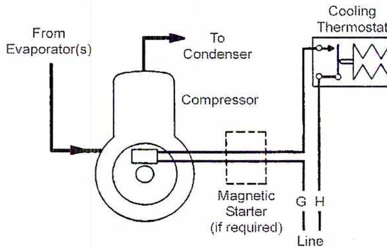
Figure 3
Thermostatic Control of Compressor
Pressure-Actuated Controls (Pressurestat)
Since the suction pressure of the refrigeration compressor is directly related to the boiling temperature of the liquid refrigerant in the evaporator, a change in evaporator
temperature is reflected by changes in suction pressure. A pressure-actuated control connected to the suction line of the compressor is used to start and stop the compressor. It is possible to maintain the evaporator temperature within close limits over varying load conditions using this system. This arrangement is illustrated in Fig. 4.
The pressure-actuated control used for this purpose consists of a switch actuated through a linkage arrangement connected to a bellows or diaphragm, which is subject to the suction pressure of the compressor. This control is similar to the thermostat in design, except that it acts in reverse; that is, it opens the switch when the pressure drops to the cut-out setting and closes it again when the pressure rises to a preset differential.
A pressure-actuated control cannot be used in conjunction with an automatic expansion valve for liquid refrigerant control because this valve maintains a constant evaporator pressure. It also cannot be used with a capillary tube since the tube does not provide a tight seal between the high- and low-pressure sides of the system when the compressor shuts down. The pressures on both sides would equalize and the rising evaporator pressure would then restart the compressor almost immediately.
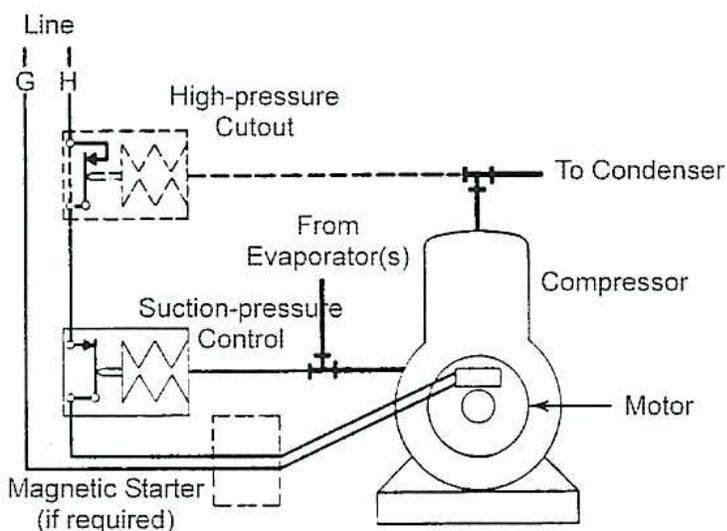
The diagram illustrates a refrigeration system's control components. A central 'Compressor' unit is driven by a 'Motor'. A 'Suction-pressure Control' unit is connected to the suction line, which is labeled 'From Evaporator(s)'. This control unit is linked to a 'Magnetic Starter (if required)'. A 'High-pressure Cutout' unit is connected to the discharge line, which is labeled 'To Condenser'. Two electrical lines, labeled 'G' and 'H', are shown on the left, representing the power supply to the motor and controls.
Figure 4
Suction Pressure Controlled Compressor
Humidity-Actuated Controls (Humidistat)
In some air conditioning systems, refrigeration is used to lower the humidity of the air by condensing the moisture on the cold surfaces of the evaporator or dehumidifier. The refrigerant flow to the evaporator is then controlled by a humidistat. When used to control dehumidification, this control is often referred to as a dehumidistat.
The sensing device of a humidistat may consist of a hygroscopic (moisture absorbing) element. Controllers of this type used to use multiple strands of human hair for this
purpose. Hair increases in length when the humidity of the air increases and decreases in length when the humidity drops. Synthetic materials are now used in place of human hair.
The change in length is used to activate the control mechanism, which may be a switch for on-off control or a potentiometer (which measures voltage changes) for modulating control, in order to control the rate of refrigerant flow to the evaporator coils in the dehumidifier.
Another type of humidistat uses the electrolytic hygrometer cell shown in Fig. 5, consisting of a chamber containing two electrodes supporting a thin layer of desiccant (drying agent) such as a hygroscopic salt. Moisture in the air is absorbed by this salt. When a constant low-power DC electric current is applied, the salt dissolved in the moisture breaks down into charged ions allowing the moisture to conduct an electric current. This reduced resistance to current flow results in a reduced voltage drop across the electrodes. This measured voltage, proportional to the moisture content, is then amplified for control purposes.
![Diagram of an Electrolytic Hygrometer Cell (Figure 5). The diagram shows a cross-section of the cell assembly. A central 'Cell Element' is enclosed within a 'Body'. The cell element has two electrodes labeled (-) and (+). The entire assembly is mounted on a 'Heated Cell Block'. Air enters from the left through 'Sample Air In' and exits through 'Sample Air Out'. The cell element is connected to an 'O-Ring' and a 'Voltage To Cell + Output Signal' line. The diagram also shows internal components like resistors and a dashed line representing the air flow path.](a33da0f14e456f92539ce3e9b7d81f9a_img.jpg)
Figure 5
Electrolytic Hygrometer Cell
When used to control a humidifier, the humidistat opens the contacts of the switch, stopping the operation of the humidifier when the required relative humidity has been reached. This cut-out point is changed by adjusting the dial to the desired relative humidity setting. When the humidity drops below this setting, the hygroscopic element becomes shorter, closes the contacts, and puts the humidifier back into operation.
Humidistats should be kept dust free, and their covers must permit free air circulation over the element.
ACTUATING CONTROLS
The main actuating controls of refrigerant systems and their purposes are discussed in the following section, they include:
- • Refrigerant flow controls (expansion valves)
- • Solenoid valves
- • Condenser cooling water regulating valves
- • Evaporator pressure regulating valves
Refrigerant Flow Control (Expansion Valve)
One of the most important secondary controls in a refrigerating system is the refrigerant flow control used to regulate the amount of liquid refrigerant flowing into the evaporator.
Solenoid Valves
The electromagnetically operated solenoid valve is used in refrigeration systems to stop the flow of liquid refrigerant to evaporators or the flow of cooling water to compressors and condensers.
A separate solenoid valve is used to control the flow of liquid refrigerant to each evaporator in a multi-evaporator system. The temperature of the section or zone served by each evaporator is controlled independently. A thermostat placed in that particular zone shuts off the solenoid valve, and thus, the flow of liquid refrigerant to the zone evaporator when refrigerating requirements are satisfied.
Solenoid valves are also used in conjunction with electric low-pressure float switches to maintain the level in flooded evaporators.
Most condensers and compressors in larger refrigerating systems are water-cooled rather than air-cooled because of the greater cooling efficiency of water. When municipal or utility water is used for cooling, the flow of cooling water to the system is often controlled by a solenoid valve in order to avoid water wastage. The valve is energized and opens when the compressor is started and closes again when the compressor stops. In a multi-compressor system, the cooling water flow to each compressor is controlled by separate solenoid valves.
Condenser Cooling Water Regulating Valve
This valve is used to automatically regulate the flow of cooling water to the condenser when the compressor is in operation, and to shut off the flow when the compressor stops. The valve, illustrated in Fig. 6, is operated by the vapour pressure on the discharge side of the compressor. This pressure acts on the bellows and tends to open the valve against the spring force trying to close the valve.
When the compressor is not in operation, the pressure on the high side will not be high enough to overcome the spring tension that keeps the valve in the closed position. As soon as the compressor is started, the high side pressure builds up. When it reaches the pressure at which the force on the bellows overcomes the spring tension, the valve opens, allowing cooling water to flow into the condenser to absorb heat from the vapour.
When the heat absorbed by the cooling water balances the heat rejected by the condensing vapour, the pressure in the condenser, and thus, the amount the water valve is opened, remains constant.
When the condenser cooling load increases, the high side pressure rises, causing the valve to open wider to supply the increased amount of cooling water required.
Conversely, a reduction in load causes the high side pressure to drop, and the valve automatically reduces the water flow. When the compressor stops, the high side pressure drops so much that the spring tension overcomes the force on the bellows and closes the valve; thus, shutting off the cooling water supply.
The pressure at which the condenser is maintained is set by adjusting the spring tension.
![A detailed cross-sectional diagram of a water regulating valve. The valve body has a central vertical passage. At the top, an 'Adjustment' screw is shown. Below it, a bellows assembly is connected to a needle valve. The needle valve is positioned to open or close the flow path. 'Water In' enters from the right side of the valve body, and 'Water Out' exits from the left side. A 'High Side Connection' is shown at the bottom, consisting of a U-shaped tube leading to a pressure sensing element (bellows) that is exposed to the high-side pressure of the refrigerant system. The diagram illustrates the internal mechanism where high-side pressure acts on the bellows to overcome spring tension and open the valve.](a4d009d5dd6a4d83759d6d6538188e23_img.jpg)
Figure 6
Water Regulating Valve
Evaporator Pressure Regulating Valve
In many cases, evaporator pressure must not be allowed to drop below a certain level. Very low evaporator pressure results in a correspondingly low evaporator temperature, which causes frosting of coils or freeze-ups in water chillers during periods of minimum loading.
An evaporator pressure regulator prevents an overly low pressure and low temperature condition from occurring in the evaporator while the compressor is running. The regulating valve is installed at the evaporator outlet.
Fig. 7 shows a direct-acting evaporator pressure regulator. If the pressure in the evaporator increases, the pressure under the seat disk increases and acts indirectly on the bellows, through the valve stem, to overcome the spring force and increase the valve opening. When the pressure in the evaporator decreases, the spring force throttles the valve further and reduces the flow of refrigerant.
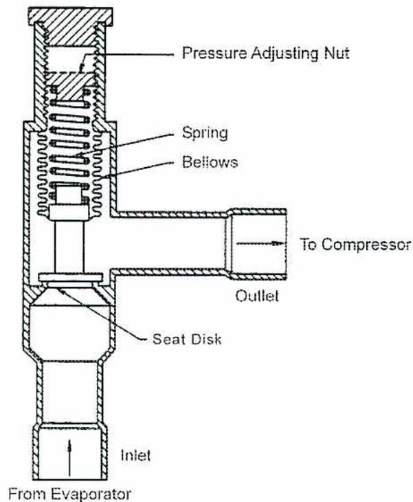
A cross-sectional diagram of a direct-acting evaporator pressure regulator. The valve body is shown with an inlet at the bottom labeled 'From Evaporator' and an outlet at the top labeled 'To Compressor'. Inside the valve, a 'Seat Disk' is connected to a vertical 'Valve Stem'. The stem passes through a set of 'Bellows'. Above the bellows is a 'Spring' mechanism. At the top of the valve, a 'Pressure Adjusting Nut' is used to set the desired pressure level. Arrows indicate the flow of refrigerant from the inlet, past the seat disk, and out through the outlet.
Figure 7
Direct-Acting Evaporator Pressure Regulator
When the temperature or humidity of the cooled space in a direct expansion evaporator is sufficiently lowered, the thermostat or humidistat signals for the closure of the solenoid valve upstream from the expansion valve. However, before the compressor can shut down, it must pump out the remaining refrigerant in the evaporator. Failure to do this could result in liquid slugging or, sometimes, a high suction pressure when the compressor is eventually restarted.
However, the evaporator pressure regulator will automatically limit the degree of pump-down. In order to circumvent this situation, a bypass valve is installed around the evaporator pressure regulator. When the solenoid valve closes, the bypass valve opens and remains open until the pump out is complete and the compressor shuts off. Then the bypass valve closes.
Evaporator pressure regulator valves are also used in refrigerating systems having several evaporators, each held at a different temperature (such as in cold storage applications). Pressure regulators installed in the outlet of each of the evaporators (operating at temperatures above the one with the lowest temperature) maintain different evaporator temperatures in these coils while the compressor suction pressure is set to maintain the pressure of the evaporator with the lowest temperature.
Sometimes, a suction pressure regulating valve is installed before the compressor to limit the suction pressure at the compressor inlet to a preset maximum if the pressure in the evaporator rises to a high value. This regulator protects the compressor from overload when the evaporator pressure rises above normal pressure.
Fig. 8 illustrates a suction pressure regulator. Note the different valve assembly, which is designed to throttle refrigerant flow when the suction pressure becomes too high, whereas the evaporator pressure regulator throttles refrigerant flow when the evaporator pressure becomes too low.
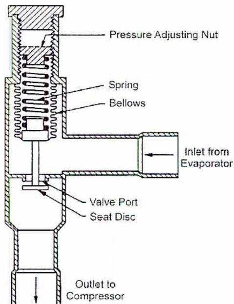
A cross-sectional diagram of a Direct-Acting Suction Pressure Regulator. The diagram shows a vertical valve assembly. At the top is a 'Pressure Adjusting Nut' which sets the tension on a 'Spring'. Below the spring is a 'Bellows' assembly. A vertical stem connects the bellows to a 'Seat Disc' at the bottom. The seat disc is positioned to open or close a 'Valve Port'. On the right side, an 'Inlet from Evaporator' is shown with an arrow pointing left into the valve body. At the bottom, an 'Outlet to Compressor' is shown with an arrow pointing down. The valve body has a complex internal shape with several chambers and passages.
Figure 8
Direct-Acting Suction Pressure Regulator
LIMITING AND SAFETY CONTROLS
Limiting and safety controls guard against any abnormal conditions in a system. They will stop operation if either a pressure or a temperature becomes excessively low or high. They also protect the compressor against oil pressure and temperature problems and the motor against high temperature and overload. There are various flow switches on chilled water and cooling water lines and air ducts.
Pressure Limits
High-Pressure Safety Cut-Out
During operation, it is possible for the condenser pressure of a refrigerating system to become higher than normal due to insufficient cooling of the high-pressure vapour in the condenser or due to the presence of noncondensables in the system.
To prevent pressure from building up to a dangerous level, CSA B52 requires that all refrigeration systems containing more than 9 kgs of refrigerant and operating above atmospheric pressure (and all water-cooled systems constructed so that the compressor (or generator in absorption refrigeration systems) is capable of producing pressure in excess of the high side design pressure) shall be equipped with a pressure-limiting device designed to stop the action of the compressor or generator at a pressure of not more than 90% of the system high side design pressure. The code also requires this device to be connected between the compressor and the first stop valve in the discharge line.
The device used for this purpose is similar in operation to a pressure-operated control, except that it has a nonadjustable differential. When the operation of the compressor motor is controlled by a suction pressure control, the high-pressure cut-out is often combined in the same housing with this control. An internal view of one type is shown in Fig. 9.
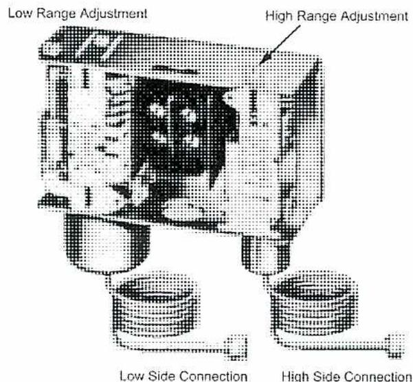
A detailed black and white photograph showing the internal components of a combined low-pressure control and high-pressure safety cut-out unit. The unit is a rectangular metal housing with a transparent cover revealing internal mechanisms. Two adjustment screws are visible on the top surface, labeled 'Low Range Adjustment' and 'High Range Adjustment'. At the bottom, two threaded ports are labeled 'Low Side Connection' and 'High Side Connection'.
Figure 9
Low-Pressure Control and
High-Pressure Safety Cut-out Combined
Low-Pressure Cut-off
The pressure operated safety switch is used to protect the system against a lower than normal suction pressure. Low suction pressure occurs when the pressure-actuated operating control fails to stop the compressor at its cut-out pressure. It could also occur in a system with a temperature-actuated motor control if the evaporator ices up excessively, preventing proper heat transfer, consequently causing a warm condition in the cooled space. This situation would cause the thermostat to signal for continued operation of the compressor. The low-pressure limit is set according to operational requirements.
This cut-off operates on the same principle as the high-pressure safety cut-out. When a low-pressure cut-off is used, it is usually combined with a high-pressure cut-out. This combination control is provided with a manual reset so that an operator can investigate the cause of the trouble when the compressor shuts down prematurely before temperature conditions are satisfied.
Temperature Limits
Low Limit Thermostat
Except for its application, the low limit thermostat is identical to a compressor control thermostat. It is used in systems where a drop in temperature below the minimum setting of the operating thermostat could result in damage to the equipment. For example, it is important that the water in water chilling systems is never allowed to freeze since this could cause extensive damage to the chiller. To prevent freezing, the sensing element of a low limit thermostat is immersed in the water at the coldest point in the chiller. The thermostat is set to break the control circuit of the compressor at a temperature several degrees above the freezing point.
Chilled Water, Low-Temperature Cut-out and Recycle Switch
This safety device uses a thermostat to sense the chilled water temperature leaving the chiller. If the temperature drops approximately 2°C - 3°C below the setpoint of the control thermostat, it shuts down the compressor. When the water temperature rises approximately 5°C - 6°C again, the thermostat restarts the compressor.
Chilled Water Flow Switch
This switch, installed in the chilled water exit line, protects the chiller from freezing due to lack of water flow. It opens the compressor motor circuit when water flow drops below the safe minimum flow. It also prevents the compressor from starting if flow has not been established.
Compressor Protection
Oil Pressure Failure Switch
Failure of a forced lubrication system could cause extensive damage to a refrigeration compressor. Therefore, it is necessary to equip the compressor with an oil pressure failure switch which shuts down the compressor when oil pressure drops below a safe minimum limit for longer than a predetermined period.
Since the crankcase or housing of a compressor is subjected to suction pressure, oil pressure should be measured as the pressure difference between oil pump discharge pressure and suction pressure.
The oil pressure failure switch is equipped with two opposed pressure bellows which operate a timed switch controlling the power supply to the compressor motor. The pressure of the oil pump discharge is exerted on one bellow while the suction pressure is exerted on the other. As long as the oil pressure is a specified amount higher than the suction pressure, the timed switch is kept in the closed position allowing operation of the compressor.
Fig. 10 identifies the main parts of the oil pressure failure switch. When the compressor is started, the differential pressure switch and the timer switch are closed. The time delay allows the compressor to operate for about two minutes to establish the required oil pressure differential. If this pressure differential is not established within the preset time, the compressor motor shuts off. Also, when the oil pump discharge pressure drops below the differential pressure switch cut-in point, the differential pressure switch closes and the time delay relay shuts down the compressor within a given time.
In Fig. 10, the contacts of the differential pressure switch A and timer switch B are both closed when the compressor is started. After the pressure differential increases to the cut-in point (within the required time), the differential pressure switch opens and de-energizes the heater circuit of the time delay before the bimetallic strip can open the timer switch contacts. The compressor continues to operate normally.
![Schematic diagram of an Oil Pressure Failure Switch. The diagram shows a central control box with several components: a 'Diff. Pressure Switch' (A) connected to 'Crankcase or Suction Pressure' and 'Oil Pump Discharge Pressure'; a 'Heater' and 'Bimetal' strip; a 'Timer Switch' (B) with a 'Resistor' (values 220 and 110); a 'Reset Button'; and a 'Starter Overload Relays Normally Closed' switch. These components are wired to 'Power Supply In' terminals L and M, and to a 'Starter Holding Coil'. The 'Diff. Pressure Switch' is shown with an upward arrow indicating its actuation direction.](e69b9188aa2c14ec6b21c83f711fef65_img.jpg)
Figure 10
Oil Pressure Failure Switch
If the oil pressure differential does not build to the cut-in point within a preset time, the energized heater causes the bimetallic strip to bend. The timer switch contacts open and the compressor stops. The compressor cannot be started again until the heater and the bimetallic strip have cooled and the timer switch is manually reset.
If the oil pump discharge pressure should drop below the cut-in point during compressor operation, the crankcase or suction pressure closes the differential pressure switch. The heater circuit is energized, causing the timer switch to stop the compressor within a given amount of time.
High Oil Temperature Cut-out
This safety control shuts down a compressor when the lubricating oil temperature becomes too high due to loss of water in the oil cooler or if a bearing failure causes excessive heat generation.
This cut-out consists of a bimetallic thermostat or a thermistor that is part of a bridge circuit connected to an electronic amplifier. A thermistor is an electronic component whose electrical resistance varies quickly and substantially in response to changes in temperature. It reacts faster than a thermostat and is used when speed of reaction is important. These temperature sensing devices open a relay in the motor starting circuit, stopping the motor when the oil temperature exceeds safe limits.
Low Oil Sump Temperature Protection
This switch prevents compressor startup if the oil heater fails to heat the lubricating oil to a preset temperature so that the refrigerant dissolved in the oil separates from the lubricant.
Centrifugal Compressor Vane Closed Switch
This switch, in the starting circuit of the motor, is closed when the guide vanes of a centrifugal compressor are in the closed position; thus, allowing the compressor to be started only under no-load condition.
Motor Protection
High Motor Temperature Cut-out
The high motor temperature cut-out stops the compressor if there is a loss of motor cooling or motor overload due to malfunction of the operating controls. The temperature sensing devices are similar to those in the high oil temperature cut-out.
Motor Overload Protection
One type of motor overload protection device uses a current transformer with a resistor in the motor circuit. An increase in current flow causes a greater voltage drop across a resistor in the electrical circuit. This change in voltage is amplified by an electronic circuit to operate relays controlling the refrigeration system or to close the inlet vanes at the centrifugal compressor inlet.
If the vane control should fail, the relay operates solenoid valves to force the hydraulic motor on the vanes into the closed position by applying oil or air pressure to one side of the piston and bleeding the other side.
Flow Protection
Flow Switch
Flow switches are used on chilled water and cooling water lines and air ducts. They are used as safety lockout switches for the refrigerating system should the flow in these lines or ducts slow to insufficient amounts or cease altogether. They can also be used to close flow indicator circuits. The switch is operated by the force exerted on a flexible vane immersed in the liquid flowing through the line. Air flow switches operate on a similar principle.
Pressure Relief Devices
Since a refrigeration system, regardless of its size, is a closed pressure system, the possibility always exists that the pressure in the system or in its components may build up excessively due to:
- • Extreme temperature conditions
- • Malfunctioning controls
- • Inadvertently closed stop valves
To prevent extreme pressure, CSA Standard B52 (Mechanical Refrigeration Code) requires that every refrigerating system be protected by one or more pressure relief devices. These devices must be connected as nearly as practical to the part or parts of the system to be protected, and no stop valve shall be located between the relief device and these parts.
The code requires that positive displacement compressors operating above 103 kPa and having a displacement exceeding 819.5 cm 3 per revolution shall be equipped by the manufacturer with a pressure relief device of adequate size and pressure setting to prevent rupture of the compressor. This device shall be located between the compressor and the stop valve on the discharge side. The discharge from this relief device may be vented to atmosphere or into the lower pressure side of the system.
Each pressure vessel which contains liquid refrigerant and has an internal gross volume exceeding 0.085 m 3 (and which may be shut off by valves from all other parts of a refrigerating system) shall be protected by a pressure relief device having sufficient capacity to prevent the pressure in the vessel from rising more than 10% above the setting of the pressure relief device.
Pressure relief devices shall discharge to the outside of the building. The code allows, under certain circumstances and usually only for smaller systems, discharge inside the building.
Pressure relief devices mounted on the high side of the system may discharge into the low side of the system, provided the pressure relief devices are of a type not appreciably affected by back pressures and provided the low side of the system is equipped with adequate pressure relief devices.
The most common pressure relief devices used in refrigeration systems are the:
- • Spring-loaded relief valve
- • Fusible plug
- • Rupture disc
Spring-Loaded Relief Valve
This relief valve is a spring-loaded valve, set to open and discharge refrigerant if pressure exceeds the set value. The spring-loaded safety valve has the advantage of resealing itself, or closing, when the pressure drops to a safe limit. A relief valve is shown in Fig. 11.
![Figure 11: Spring Loaded Pressure Relief Valve. A cross-sectional diagram showing the internal components of a pressure relief valve. Labels include: 'Installation Date Tag' pointing to a tag on the side; 'Accurately Factory Set and Sealed' pointing to the top assembly; 'Ductile Iron Body for Added Strength' pointing to the main housing; 'Stainless Steel Seat Insert' pointing to the bottom seat; 'Neoprene O-Ring Helps Seal Valve from Moisture' pointing to an O-ring at the top; 'Stainless Steel Spring' pointing to the central spring; 'Stainless Steel Piston' pointing to the piston assembly; and 'Premium Grade Virgin Teflon Seat Disc' pointing to the disc at the bottom of the piston.](ae02603e9e4b46477222bf72c1c7c7f6_img.jpg)
Figure 11
Spring Loaded Pressure Relief Valve
(Courtesy of Hansen Technologies)
Fusible Plug
The fusible plug relief device (Fig. 12) consists of a connection filled with a metal alloy designed to melt at a specific temperature. Because refrigerant temperature is related to pressure, refrigerant can be released by sensing the temperature before a dangerous pressure is reached. The plug melts when the rated temperature of the relief device is reached, allowing the entire refrigerant charge to escape. A new plug and a new refrigerant charge will then be required before the system can be put back into operation.
Fusible plugs are commonly used in smaller systems. Since the loss of refrigerant in large systems is quite costly, the use of spring-loaded relief valves is more economical and more practical in such systems.
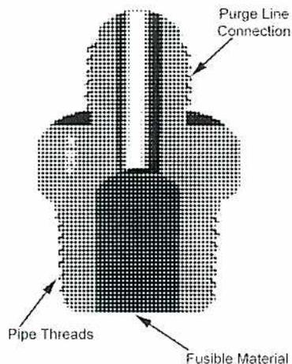
Figure 12
Fusible Plugs
(Mueller Brass Co.)
Rupture Discs
The rupture disc, shown in Fig. 13, is similar in appearance to the fusible plug, but it has a thin metal disc inside which bursts before the pressure in the system reaches dangerous levels. It is also threaded into the liquid receiver and is connected to a purge line to carry away the released refrigerant. All rupture members used in lieu of or in series with a relief valve shall have a nominal rated rupture pressure not exceeding the design pressure of the protected parts of the system.
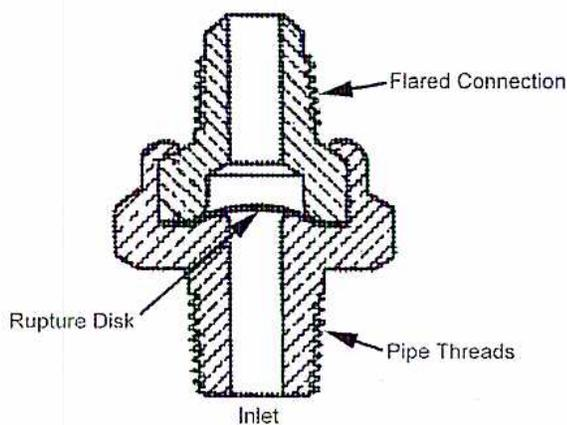
A cross-sectional diagram of a rupture disc assembly. The assembly consists of a central vertical pipe section with threads on its outer surface, labeled "Pipe Threads". This pipe is connected to a larger, flared housing at the top, labeled "Flared Connection". Inside the central pipe, there is a thin, curved metal disc, labeled "Rupture Disk". The bottom of the central pipe is labeled "Inlet".
Figure 13
Rupture Disc
(Courtesy of ASHRAE)
Objective 3
Explain refrigeration metering devices.
REFRIGERATION METERING DEVICES
The flow of liquid refrigerant from the high-pressure side of the system to the low-pressure side must be controlled in order to obtain and maintain the desired temperature of the cooled medium. To obtain this control, a metering device is required to measure and adjust the flow of liquid refrigerant to the evaporator. Without such a device, the evaporator may receive either an insufficient amount of refrigerant, resulting in an insufficient cooling effect, or it may receive too much liquid so that not all of the liquid evaporates. The unvaporized liquid may be drawn into the compressor with the vapour and cause serious damage.
In some older refrigerating systems, the flow of liquid refrigerant to the evaporator is manually controlled. In modern systems, the metering or flow control devices are operated automatically, with the possible exception of very large systems where qualified operators are in attendance at all times.
There are six basic types of metering or flow control devices, only one of which is manually operated. These devices are:
- • Hand-operated expansion valves
- • Automatic expansion valves (constant pressure)
- • Thermostatic expansion valves
- • Low-pressure float valves
- • High-pressure float valves
- • Capillary tubes
Hand-Operated Expansion Valves
A manual expansion valve used in small capacity refrigerating systems is shown in Fig. 14(a). It is made of brass and is connected to the system by flared compression fittings.
In order to stand up to the severe requirements of throttling service, this type of valve is equipped with a valve stem tapered at the end and a matching tapered valve seat. The spindle has a fine thread which makes precise adjustment possible. The valve is adjusted by removing the cap and turning the spindle with a wrench or key.
Fig. 14(b) shows another type of hand-operated expansion valve suitable for larger flows. It has an index pointer for greater adjustment precision. These manual expansion valves
are seldom used in modern refrigeration systems. However, they are occasionally used in bypass lines around the automatic control valve.
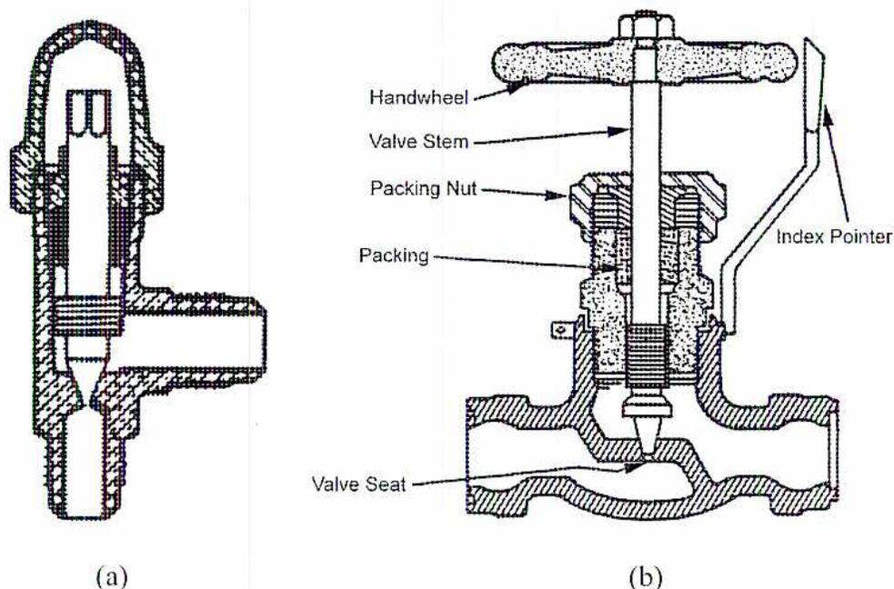
Figure 14 consists of two diagrams, (a) and (b), illustrating hand-operated expansion valves. Diagram (a) is a cross-sectional view of a valve body, showing the internal structure where the valve stem meets the valve seat. Diagram (b) is a more detailed cross-section of the valve assembly, showing the external components and internal mechanism. Labels in (b) include: Handwheel (the top part used for manual operation), Valve Stem (the central rod), Packing Nut (the nut used to secure the packing), Packing (the material around the stem to prevent leaks), Index Pointer (a pointer indicating the valve's position), and Valve Seat (the surface where the stem seals the flow).
Figure 14
Hand-Operated Expansion Valves
Automatic Expansion Valves (Constant Pressure)
The automatic expansion valve is a liquid refrigerant control valve which maintains a constant pressure in the evaporator during the time the compressor is operating, regardless of load. In addition, the valve automatically shuts off the liquid flow when the compressor stops. The basic construction and principles of operation of the automatic expansion valve are shown in Fig. 15.
The valve stem is attached to a bellows or diaphragm in the underpart of the valve housing. A spring exerting a downward force on the diaphragm tends to open the valve. This force is counteracted by the evaporator pressure acting upward against the diaphragm, which tends to close the valve. The spring tension is adjusted so that during operation the two forces balance each other and the valve is opened sufficiently to allow enough liquid to flow into the evaporator to maintain the desired pressure, and therefore, the desired temperature.
When the temperature of the refrigerated space or substance drops below the desired temperature, the thermostatic switch stops the compressor. However, the expansion valve is still open and the liquid entering the evaporator continues to vaporize. This causes the pressure to rise since the vapour is no longer removed by the compressor. This increased evaporator pressure acting on the underside of the diaphragm overcomes the downward force of the spring and causes the valve to close, stopping the flow of liquid refrigerant into the evaporator.
When the temperature of the refrigerated space or substance rises above the thermostat setting, the thermostat starts the compressor up again. The increased movement of vapour out of the evaporator causes the pressure to drop to the point where the evaporator pressure on the diaphragm becomes less than the downward spring force. The valve opens to allow liquid refrigerant to flow into the evaporator.
Automatic expansion valves were extensively used on small refrigerating units such as refrigerators and freezers, but due to inherent disadvantages, their use has been discontinued in favour of more efficient types of controllers.
An automatic expansion, or constant pressure, valve is suitable when compressors are controlled by thermostats activated by room temperature. It cannot be used when more than one cooling coil is connected to the same compressor.
If two constant pressure valves admitted refrigerant to two interconnected cooling coils, unequal cooling loads could cause the thermostat to call for the compressor to continually operate, thus lowering the pressure in the coils and causing both valves to stay open. The valve supplying the coil with the higher cooling load near the thermostat would admit refrigerant that vaporized completely in the coil, thus causing no problem. However, the valve supplying the coil distant from the thermostat, and with a possibly much reduced cooling load, could admit refrigerant that did not vaporize completely in the coil. This unvaporized refrigerant would carry over as liquid slug into the compressor causing damage. The thermostatic expansion valve was designed to overcome this problem.
![Cross-sectional diagram of an Automatic Expansion Valve. The diagram shows a valve body with an 'In' port on the left containing a 'Strainer'. A 'Needle and Seat' mechanism is centrally located. Above the needle is a 'Bellows or Diaphragm' which is subjected to 'Evaporator Pressure' from the right. A 'Spring' is positioned above the bellows, with its force labeled 'Spring Pressure'. An 'Adjusting Screw' is at the top, used to set the spring tension. An 'Out' port is on the right side of the valve body.](48f188337e3ba41df38fab9ac0afb1bd_img.jpg)
Figure 15
Automatic Expansion Valve
Thermostatic Expansion Valves
The thermostatic expansion valve is the most widely used refrigerant control. It is similar in construction to the automatic expansion valve. However, it contains a thermal power element. This thermal power element consists of a bellows or a diaphragm chamber connected to a temperature sensing bulb by means of a small capillary tube. The bulb is usually charged with the same refrigerant used in the system. The refrigerant in the thermal bulb is in liquid form and the rest of the element is filled with refrigerant vapour. Fig. 16 shows a cross-sectional view of a diaphragm type thermostatic expansion valve.
![A detailed cross-sectional diagram of a Thermostatic Expansion Valve (TEV). The valve body has an 'Inlet' on the left and an 'Outlet' on the right. Inside, a 'Diaphragm' is connected to a central rod. Above the diaphragm is a 'Capillary Tube' that leads to a 'Bulb'. The bulb is connected to the 'Outlet' piping. An 'External Equalizer Connection' is shown on the right side of the valve body. Below the diaphragm, a 'Balance Valve' and a 'Spring' are visible, which help regulate the flow of refrigerant through the valve.](5f18c728fc511750ffcaa626716b920e_img.jpg)
Figure 16
Thermostatic Expansion Valve
A simplified diagram of a thermostatic expansion valve installed on the inlet of an evaporator is shown in Fig. 17. The thermal bulb, also called a feeler, sensing, or remote bulb, is strapped to the piping at the evaporator outlet. The bulb is sensitive to temperature changes in the evaporator. A change in temperature will change the pressure of the refrigerant in the thermal power element.
![Figure 17: Basic Diagram of Thermostatic Expansion Valve and Evaporator. The diagram shows a thermostatic expansion valve (TXV) on the left and an evaporator coil on the right. The TXV is connected to a remote bulb on the evaporator outlet. The valve assembly includes a bellows or diaphragm, a needle and seat, a strainer, a spring, and an adjusting screw. The remote bulb is connected to the valve via a capillary tube. The evaporator coil is shown with three horizontal sections. The refrigerant enters the evaporator from the valve at point A, with a pressure of -7°C, 142 kPa. It exits the evaporator at point B, also at -7°C, 142 kPa. Between points B and C, the refrigerant is superheated. At point C, the refrigerant has a temperature of -1°C and a pressure of 142 kPa. The remote bulb is located at point C, where the refrigerant is superheated. The bulb pressure is indicated as -1°C, 197 kPa. The valve assembly is also labeled with 'Bulb Pressure', 'Evap. Pres. -7°C, 142 kPa', and 'Spring Pressure'.](f9a14fbfecbd7d059226cc93677d721b_img.jpg)
Figure 17
Basic Diagram of Thermostatic Expansion Valve and Evaporator
The thermostatic expansion valve adjusts the amount of liquid admitted to the evaporator so that, under all load conditions, nearly the entire surface is utilized for heat absorption by evaporating liquid. However, at the same time, it ensures that no liquid leaves the evaporator with the vapour. This requires the vapour to leave the evaporator slightly superheated, usually \( 5^{\circ}\text{C} \) - \( 6^{\circ}\text{C} \) . This is shown in Fig. 17. At point B all liquid has been evaporated, but the vapour temperature is still at the saturation temperature corresponding to the evaporator pressure. Between B and C, however, the heat absorbed by the vapour causes its temperature to rise above saturation temperature, thus becoming superheated.
Since the bulb has a fixed inside volume, the pressure inside the bulb increases as its temperature increases. Thus, as the bulb heats up, its inside pressure becomes greater than the pressure in the evaporator (saturation pressure corresponding to the temperature of the liquid refrigerant).
The operation of the expansion valve is controlled by the interaction of two forces:
- • The force exerted by the thermal element, which tends to open the valve.
- • The forces exerted by the evaporator pressure and spring, which tend to close the valve.
When an insufficient amount of liquid refrigerant is admitted to the evaporator, the superheat of the vapour leaving the evaporator rises and causes the pressure in the thermal element, and thus the force on the diaphragm, to increase. This action opens the valve more, allowing more liquid refrigerant to enter the evaporator.
If too much liquid enters the evaporator, the superheat is reduced or eliminated and the pressure in the thermal element drops. This reduces the force on the diaphragm so that the valve closes, to some degree, and reduces the flow of liquid refrigerant.
The thermal expansion valve, illustrated in Fig. 17, works quite satisfactorily provided the pressure drop across the evaporator is small. However, in many coil type evaporators, pressure drop can be quite large, causing a reduction in temperature and pressure near the evaporator outlet. The reduction in temperature causes a pressure reduction in the thermal element resulting in reduced valve opening. To obtain sufficient valve opening to supply enough liquid refrigerant to match the refrigerating load, increased superheat of the vapour leaving the evaporator is required. This means that more evaporator surface will be needed to provide superheat and less surface will be available to provide cooling by evaporating liquid refrigerant. The net result is reduced evaporator efficiency.
To compensate for a large pressure drop in an evaporator, the thermal expansion valve is equipped with an equalizing line which connects the underside of the diaphragm or bellows with the outlet of the evaporator instead of the inlet. The reduction in the downward force of the thermal element is now compensated for by a reduction in upward force exerted by evaporator pressure. The valve will now admit enough liquid to maintain the superheat at the outlet at \( 5^{\circ}\text{C} \) - \( 6^{\circ}\text{C} \) and provide maximum evaporator efficiency.
A diagram of an evaporator equipped with a thermal expansion valve and an equalizing line is shown in Fig. 18.
![Diagram of a Thermostatic Expansion Valve with Equalizing Line. The diagram shows a valve assembly with a bulb connected to the top of the evaporator coil, an equalizing line connected to the bottom of the evaporator coil, and a spring mechanism. The evaporator coil is divided into three sections with different pressures and temperatures. The inlet is at 103 kPa, -6°C. The first section is at 142 kPa, -7°C. The second section is at 118 kPa, -10°C (Saturation Temp.). The third section is at 103 kPa, -12°C. The bulb pressure is 151 kPa, -6°C. The spring pressure is 48 kPa. The superheat section is indicated between points A and B.](f6d72d7c790e7f585532140f3971639a_img.jpg)
The diagram illustrates a Thermostatic Expansion Valve (TEV) with an equalizing line. The valve assembly includes a bulb connected to the top of the evaporator coil, an equalizing line connected to the bottom of the evaporator coil, and a spring mechanism. The evaporator coil is divided into three sections with different pressures and temperatures. The inlet is at 103 kPa, \( -6^{\circ}\text{C} \) . The first section is at 142 kPa, \( -7^{\circ}\text{C} \) . The second section is at 118 kPa, \( -10^{\circ}\text{C} \) (Saturation Temp.). The third section is at 103 kPa, \( -12^{\circ}\text{C} \) . The bulb pressure is 151 kPa, \( -6^{\circ}\text{C} \) . The spring pressure is 48 kPa. The superheat section is indicated between points A and B. The equalizing line connects the underside of the diaphragm to the outlet of the evaporator.
Figure 18
Thermostatic Expansion Valve with Equalizing Line
Low-Pressure Float Valves
In a flooded evaporator, the low-pressure float valve is used to maintain a constant level of liquid refrigerant. The float valve regulates the flow of liquid into the evaporator at the same rate it is evaporated and withdrawn as vapour by the compressor. It derives its name from the fact that the float ball is located in the low-pressure side of the system.
The float responds only to the level of the liquid in the evaporator and controls a valve which opens or closes to maintain the desired level under all load conditions. The float may be installed directly in the evaporator or in an accumulator as shown in Fig. 19(a). It may also be installed in a separate float chamber attached to the liquid/vapour space of the evaporator as shown in Fig. 19(b). External float valves are commonly used on large water chillers.
A bypass line with a hand-operated expansion valve is usually installed around the external float chamber on large capacity systems to provide cooling if the float valve should fail, Fig. 19(b). Hand-operated stop valves are also installed on the liquid and vapour connections to the accumulator so that the float chamber can be isolated for repairs without evacuating the refrigerant from the evaporator. In this system, a liquid pump provides forced circulation of refrigerant through the evaporator. If the pump should fail, cooling can be maintained by the expansion valve that bypasses the pump.
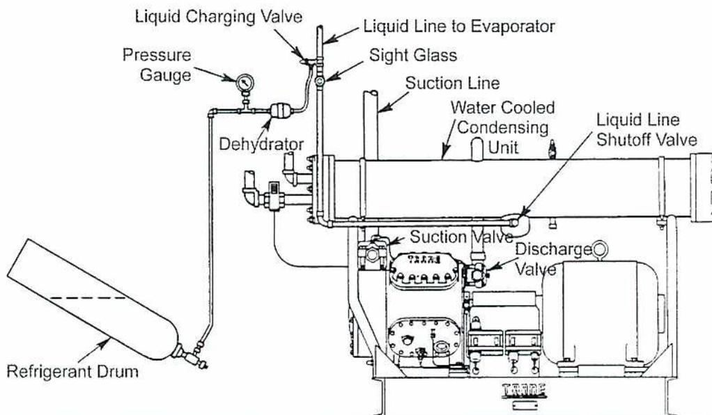
Figure 19 consists of two diagrams, (a) and (b), illustrating flooded coil-type evaporators with low-pressure float valves.
Diagram (a) shows a flooded coil-type evaporator. A float control is located in the evaporator, connected to a float chamber. The float chamber is connected to the suction line of the compressor. The liquid level in the float chamber is maintained by the low-pressure float valve. The evaporator contains a liquid-vapor mixture. A buffer is shown at the top of the float chamber. The liquid from the receiver enters the float chamber through a float control.
Diagram (b) shows a more complex system. It includes an accumulator, a pressure relief valve, an evaporator, a pump, and a bypass line. The accumulator is connected to the suction line of the compressor. The low-pressure float valve is located in the accumulator. The liquid from the receiver enters the accumulator through a strainer. The pump is connected to the bottom of the accumulator. The pump bypass line includes a hand-operated expansion valve. An oil drain is also shown.
Figure 19
Flooded Coil-Type Evaporator with Low-Pressure Float Valve
Another method of refrigerant level control in large flooded evaporators uses a low-pressure float switch in combination with a solenoid valve. The float switch is mounted in a float housing connected to the evaporator, and it controls the operation of a solenoid valve in the liquid refrigerant supply line between the receiver and the evaporator. This system is illustrated in Fig. 20.
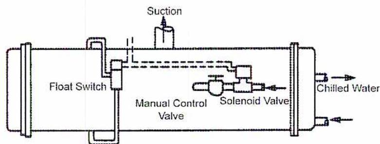
Figure 20
Water Chiller with Electric Level Control
High-Pressure Float Valves
Like the low-pressure float valve, the high-pressure float valve is also a liquid-level operated control valve. However, the float is located on the high-pressure side of the system and is operated by the liquid refrigerant level on that side. Fig. 21 shows a cross-sectional view of this valve.
![Figure 21: High-Pressure Float Valve. This is a detailed cross-sectional diagram of a high-pressure float valve. It shows a large 'Float Ball' connected to a 'Float Arm'. The 'Float Arm' is pivoted on 'Pivots' and is connected to a 'Valve Pin'. The 'Valve Pin' is positioned to open or close the 'Valve Seat'. The valve is housed in a 'Body' with an 'Inlet' on the left and an 'Outlet' on the right. A 'Vent Tube' is shown at the bottom of the body, and a 'Discharge Tube' is located near the outlet. The 'Head' of the valve assembly is shown on the right side.](e0ebcd8fdcfd34b12de3601b59505fdd_img.jpg)
Figure 21
High-Pressure Float Valve
The high-pressure float allows liquid refrigerant to flow into the evaporator at the same rate as refrigerant vapour, drawn from the evaporator by the compressor, is condensed. Since the liquid refrigerant flows directly from the condenser into the valve housing, there is no provision made in the system for storage of the refrigerant other than in the evaporator. For this reason, the amount of refrigerant charge in a system with a high-pressure float valve is critical. Too much refrigerant in the evaporator may cause liquid to be carried over to the compressor with the vapour. Insufficient liquid will starve the evaporator and reduce the capacity of the system.
An application of the high-pressure float valve is shown in the system in Fig. 22. An intermediate pressure-reducing valve is usually placed before the evaporator to reduce frosting of the line immediately after the float valve.
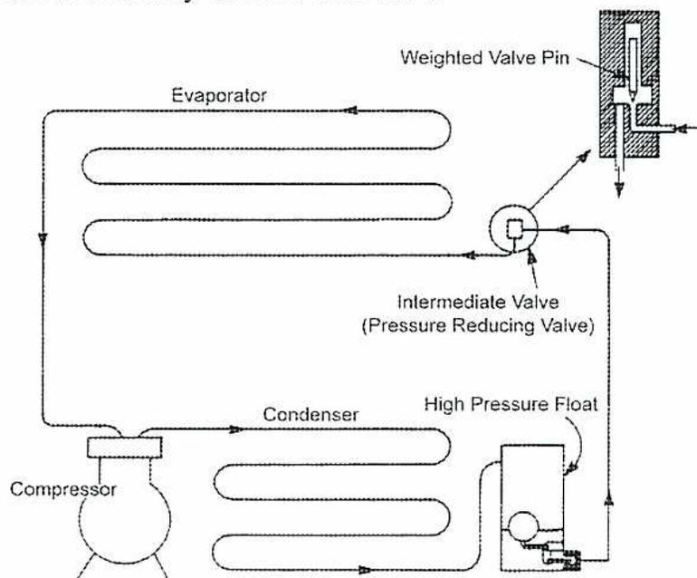
The diagram illustrates a refrigeration cycle. The main components are connected in a loop: a Compressor at the bottom left, a Condenser on the right, a High Pressure Float valve on the top right, an Intermediate Valve (Pressure Reducing Valve) on the top center, and an Evaporator on the top left. Arrows indicate the clockwise flow of refrigerant. An inset on the right provides a cross-sectional view of the High Pressure Float valve, showing a 'Weighted Valve Pin' that controls the flow based on pressure.
Figure 22
High-Pressure Float Valve Application
Capillary Tubes
The capillary tube, the simplest of all refrigerant flow controls, consists of a fixed length of tubing with a very small inside diameter. Because of the high resistance resulting from its length and small bore, it creates a considerable pressure drop along its length. It is used to restrict the flow of liquid from the condenser to the evaporator and to maintain the pressure difference between these units. Fig. 23 shows the position of a capillary tube in a low capacity system.
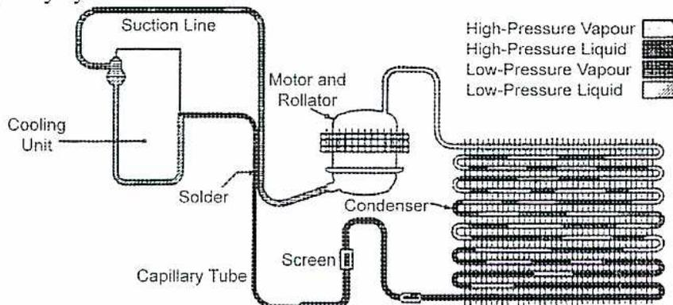
This diagram shows a refrigeration system with a capillary tube. The components include a Cooling Unit on the left, a Suction Line at the top, a Motor and Rollator in the center, a Condenser on the right, a Capillary Tube at the bottom, and a Screen filter. A legend on the right identifies the refrigerant states: High-Pressure Vapour (white), High-Pressure Liquid (dotted), Low-Pressure Vapour (horizontal lines), and Low-Pressure Liquid (vertical lines). The diagram shows the flow of refrigerant through the system, with the capillary tube acting as a restriction between the condenser and the evaporator.
Figure 23
Refrigeration System with Capillary Tube
(Courtesy of Borg-Warner)
Since the capillary tube is not as sensitive to load changes as other control devices, it is used only on small refrigerating equipment with fairly constant loads, such as domestic refrigerators and freezers and room air conditioners.
Objective 4
Explain evaporator and compressor capacity controls.
INTRODUCTION
It is very important to design a refrigerating system so that its maximum capacity is slightly greater than the average maximum sustained load. The system must still be capable of maintaining the desired temperature and humidity during periods of peak loading. This can be performed most efficiently by controlling the:
- • Evaporator capacity
- • Compressor capacity
EVAPORATOR CAPACITY CONTROL
The capacity of an evaporator can be controlled by using:
- • Sectional evaporators
- • Evaporator dampers
Sectional Evaporators
Sectional evaporators (Fig. 24), are divided into two sections, A and B, each with a refrigerant flow control valve. Sections of the evaporator can be shut off as the cooling load decreases. When the load decreases, a solenoid valve, installed in the liquid refrigerant line, closes to make section A inoperative. The area of each section is proportional to the reduction in cooling load.
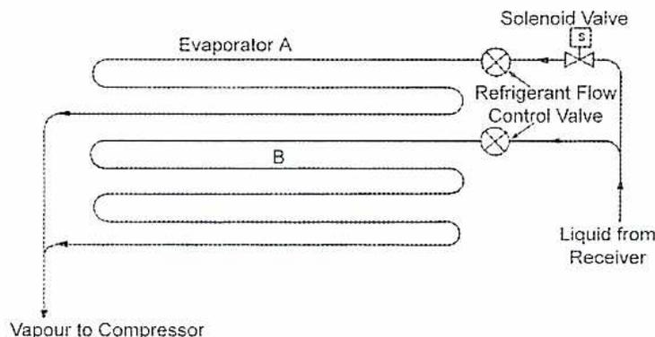
The diagram illustrates a two-section evaporator system. A liquid refrigerant line from a receiver enters from the right. This line branches into two evaporator coils, labeled 'Evaporator A' (top) and 'B' (bottom). Each branch contains a 'Refrigerant Flow Control Valve' (represented by two circles with an 'X'). A 'Solenoid Valve' (represented by a circle with an 'S') is positioned on the liquid line leading to Evaporator A. The outlets of both evaporator coils merge and lead to a common line labeled 'Vapour to Compressor' at the bottom left.
Figure 24
Two-Section Evaporator
Evaporator Dampers
An evaporator may be equipped with a face damper (Fig. 25) to vary the quantity of air being cooled as it passes over the evaporator coils. This damper increases the resistance to the passage of air as it moves towards its closed position.
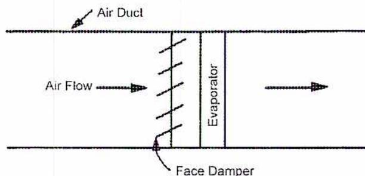
A schematic diagram of a rectangular air duct. A vertical line represents the 'Face Damper', which is hinged at the bottom and has diagonal hatching. To the right of the damper is a vertical rectangular section labeled 'Evaporator'. Arrows indicate 'Air Flow' entering from the left and exiting to the right. The top wall of the duct is labeled 'Air Duct'.
Figure 25
Face Damper Control
Fig. 26 shows another type with both face and bypass dampers. These dampers are connected to the same damper drive so that the bypass damper opens as the face damper closes. The capacity of cooling is controlled by varying the amount of air passing through the evaporator coils. Regardless of the damper position, the quantity of air passing through the duct remains fairly constant.
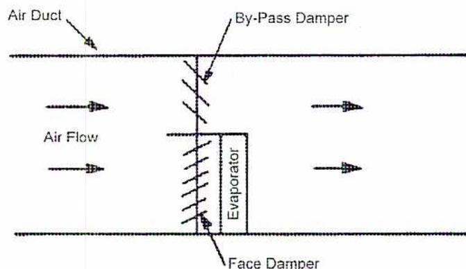
A schematic diagram of a rectangular air duct. It features a 'Face Damper' (hinged at the bottom, hatched) and a 'By-Pass Damper' (hinged at the top, hatched) connected by a common vertical linkage. The 'Evaporator' is a vertical rectangular section. Arrows show 'Air Flow' entering from the left, with some passing through the evaporator and others being diverted by the bypass damper. The top wall is labeled 'Air Duct'.
Figure 26
Bypass Damper Control
Multispeed blowers and dampers are often used in combination to provide a better balance between the air flow supplied by a fan and the amount of air required for cooling. Controlling evaporator capacity requires simultaneous control of compressor capacity.
COMPRESSOR CAPACITY CONTROL
Refrigerating compressors are usually driven by constant speed electric motors. Since the capacity of the compressor often exceeds the applied refrigerating load, it is necessary to regulate compressor output.
The two most commonly used methods of reciprocating compressor output control are:
- • Intermittent operation: the compressor is stopped when the desired low temperature of the substance to be cooled is reached, and it is started up again when the temperature rises to a certain level.
- • Continuous operation with reduced output: the capacity of a reciprocating compressor is reduced by unloading one or more cylinders or by bypassing some of the flow to the suction.
The following methods are used to reduce compressor output; some are applicable to reciprocating compressors and others are applicable to centrifugal compressors:
- • Compressor unloader
- • Cylinder bypass
- • Hot gas bypass
- • Compressor speed control
- • Suction throttling
- • Variable inlet guide vanes
Compressor Unloader
Intermittent operation is normally used in low capacity refrigeration systems with moderately constant loads. In larger systems, especially when operated at light loads, frequent starting and stopping (cycling) would put undesirable stresses on the motor and switchgear and could cause severe power fluctuations. In such systems, the compressor is kept in operation continuously, but its output is reduced by unloading cylinders.
Cylinder unloaders work by keeping the intake valves of one or more cylinders in the open position, preventing compression of the vapour drawn in during the suction stroke. Fig. 27 shows a cylinder unloader and the controlling solenoid valve.
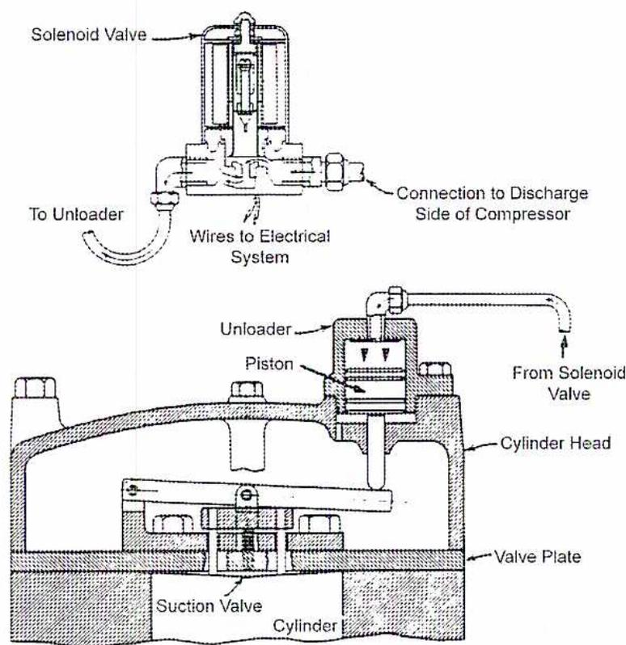
The diagram shows a solenoid valve at the top with three connections: 'Wires to Electrical System', 'To Unloader', and 'Connection to Discharge Side of Compressor'. Below this, a line labeled 'From Solenoid Valve' leads to an 'Unloader' assembly mounted on the 'Cylinder Head'. Inside the unloader is a 'Piston'. Below the cylinder head is the 'Valve Plate' and the 'Suction Valve'. The main 'Cylinder' is at the bottom. Arrows indicate the flow of pressure from the solenoid valve to the unloader piston to depress the suction valve.
Figure 27
Cylinder Unloader and Solenoid Valve
As the compressor suction pressure falls to a preset value, a pressure switch, sensing low-pressure on the suction side, energizes a solenoid valve to open and admit condenser pressure to the unloader piston. This pressure moves the unloader piston downward to depress the suction valves and hold them in the open position. Refrigerant vapour is drawn into the cylinder during the suction stroke and is discharged back to the suction line during compression. When the suction pressure rises to a certain value, the pressure switch de-energizes the solenoid valve. This action causes the unloader piston to return to its normal position, allowing the suction valves to become operational again.
A similar unloader is required on an intermittently driven (on-off) compressor so that the compressor can start in an unloaded condition until it reaches operating speed. This reduces the starting current of the electric motor. Capacity control of multi-cylinder, continuously operating compressors may be accomplished by unloading one or more cylinders. If more than one cylinder is to be unloaded, the others would be unloaded in stages as the load decreases.
Fig. 28 shows a detailed sketch of a solenoid valve. A solenoid consists of a coil of insulated wire and an iron core to which the valve plug is connected. If the coil is energized by an electrical current, the magnetic lines of force draw the iron core upward into the centre of the magnetic field, opening the valve. When the coil is de-energized, the iron core, or armature, drops down and closes the valve port.
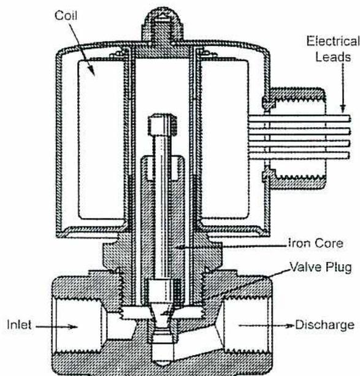
Figure 28
Direct-Acting Solenoid Valve
Cylinder Bypass
Another method of controlling the capacity of reciprocating compressors is by bypassing the discharge from one or more cylinders back to the suction side of the compressor. Fig. 29 illustrates a two-cylinder compressor with the capability of bypassing one cylinder.
![Figure 29: Cylinder Bypass. A schematic diagram of a two-cylinder compressor system. 'Vapour from Evaporator' enters the 'Suction' line. The suction line branches into two 'Cylinders', labeled 'A' and 'B'. The discharge from cylinder 'A' passes through a 'Check Valve' and is directed 'to Condenser'. The discharge from cylinder 'B' passes through a 'Solenoid Valve' (labeled 'S'). From the solenoid valve, the discharge can be diverted through a 'By-Pass' line back to the suction line before the cylinders. This allows cylinder 'B' to be bypassed, reducing the overall capacity of the compressor.](9b6b5924b48bf2fd5f347f88f06f45b3_img.jpg)
Figure 29
Cylinder Bypass
When the suction pressure at the compressor drops to a preset value, a pressure switch energizes the coil of the solenoid valve. This opens the bypass line to allow the discharge from cylinder B to flow back into the compressor suction line. The discharge from cylinder A is allowed to pass to the condenser. A check valve in the line connecting the two cylinder discharge lines prevents the discharge from cylinder A being bypassed. When the suction pressure increases to the preset cut-out pressure, the pressure switch de-energizes the solenoid to close the bypass line, returning the compressor to full capacity operation.
Hot Gas Bypass
Fig. 30 shows a simple hot gas bypass capacity control. When a reduction of compressor capacity is required, a solenoid valve located in the bypass line is energized by the pressure or temperature at the compressor inlet, allowing some hot gas to go directly into the suction line.
This type of capacity control has several disadvantages. There is little or no reduction in power consumption when the bypass line is open and compressor overheating can occur.
The hot gas bypass is used alone only on small compressors. It is often used in conjunction with other types of capacity control when it is necessary to provide capacity control down to 0% loading or when it is necessary to unload a compressor before starting. It may also be used with centrifugal compressors.
![Diagram of a Hot Gas Bypass system for a compressor. The diagram shows two compressor cylinders, A and B, connected to a common suction line. A bypass line branches off from the discharge line of cylinder B, passes through a solenoid valve (labeled 'S'), and re-enters the suction line. The discharge line from cylinder A continues to the condenser. The suction line is labeled 'Suction' and 'Vapour from Evaporator'. The discharge line to the condenser is labeled 'Vapour to Condenser'. The bypass line is labeled 'By-Pass'.](a83ba9e3e2c1e21dd69953a7b09e45b4_img.jpg)
Figure 30
Hot Gas Bypass
Compressor Speed Control
There are several ways of controlling the speed of a compressor, especially the centrifugal type:
- • A temperature sensing device, located in the chilled water outlet, controls the speed of the compressor by regulating the steam flow to the steam turbine driving the compressor (in the case of steam-driven compressors).
- • A variable speed electric motor with speed controlled according to cooling load.
- • A hydraulic coupling installed between a constant speed driver and a compressor varies the speed according to load demand.
Suction Throttling
Suction throttling is accomplished by a butterfly damper installed at the inlet to a centrifugal compressor. Although the damper can be easily adapted to automatic control with the use of a piston type positioner, its application is not economical because the input power to the compressor does not decrease by the same amount as the capacity. In general, suction throttling is being replaced by variable inlet guide vanes.
Variable Inlet Guide Vanes
Pneumatic vane operators are used on centrifugal compressors. The vanes are linked together by a cable and pulley system and are positioned by a rack and gear arrangement attached to a piston. An increase in air or oil pressure on the left side of the piston moves the piston and rack to the right, compressing the spring and opening the vanes. When there is a decrease in air or oil pressure to the piston, the spring returns the vanes towards the closed position. A vane position indicator shows the position of the blades. A vane switch acts as a safety device to prevent the compressor from being started unless the vanes are closed.
As the vanes move towards the closed position in response to a requirement for reduced compressor capacity, they swirl or spin the refrigerant vapour in the same direction as the compressor impeller. This results in a reduction in power required by the compressor. Thus, as compressor capacity is reduced, compressor power requirements are correspondingly reduced.
Objective 5
Describe the detailed startup and shutdown procedures for a refrigeration system.
REFRIGERATION SYSTEM STARTUP & SHUTDOWN
The following general guidelines cover the startup and shutdown of the following types of refrigeration systems:
- • Reciprocating/rotary compressor
- • Centrifugal compressor
RECIPROCATING/ROTARY COMPRESSOR SYSTEMS
Startup
The following general guidelines apply to systems equipped with reciprocating and rotary compressors. The operator should always consult the manufacturer's operation manual for a particular system.
The guidelines below apply to new systems and systems which have been out of operation for prolonged periods of time for maintenance or seasonal shutdown.
- 1. The operator should become familiar with the entire refrigeration system and accessories before operating the equipment.
- 2. Check that power is available to circuit breakers, water pumps, and the cooling tower.
- 3. Check the setting of high- and low-pressure cut-out switches.
- 4. Check the operation of any interlocks in the system. For example, the compressor should not be able to start if the fans in an air conditioning system are not operating or the evaporative condenser is not running properly.
- 5. Open shutoff valves in the cooling water supply and return lines of water-cooled condensers or start fan motors of air-cooled or evaporative condensers (if not tied in with the compressor starting system). Open the water supply valve to the evaporative condenser sump and check the water level.
- 6. Check oil level in the compressor. It should be at or above the centre of the sight glass.
- 7. On smaller capacity compressors, open the suction and discharge valves. On larger compressors only the discharge valve should be opened; the suction valve should be left closed on starting to avoid excessive starting torque and the resulting high power draw. When the compressor comes up to speed, the suction valve should be opened slowly.
- 8. All shutoff valves in the system should be open except bypass valves used for other purposes.
- 9. The solenoid valve in the liquid line should be closed and on magnetic coil control.
- 10. Suction, discharge, and oil pressure gauges should be connected and any valves in the connecting lines should be open.
- 11. If the compressor is equipped with an oil sump heater, ensure that it is energized and the oil temperature is high enough to drive off any refrigerant.
- 12. When all the above conditions are satisfied, start the compressor.
- 13. Check the whole system over; observe temperature and pressure gauges.
- 14. Any operating difficulties should be immediately corrected before proceeding.
- 15. Check controls for proper operation and reset if necessary.
- 16. Check the superheat setting of the thermostatic expansion valve and adjust if necessary.
- 17. Check the operation of the water regulating valve in the water supply line to the condenser.
- 18. If the compressor discharge head pressure is too high, adjust for increased condenser water flow.
- 19. Check the liquid refrigerant sight glass for bubbles; if any appear, add refrigerant.
- 20. Check the oil level in the crankcase after the compressor has run for about 15 to 20 minutes. If the compressor is pressure lubricated, check the oil pressure.
- 21. Check the entire system with a leak detector.
Shutdown
When a system has to be shut down for a prolonged period of time, it should be pumped down and all refrigerant stored in the receiver or condenser-receiver. This prevents unnecessary strain on the low-pressure side of the equipment and loss of refrigerant while the system is shut down. For a direct expansion evaporator, it is essential that the evaporator be pumped down every time the compressor stops to remove all refrigerant from the evaporator so that liquid slugging will not occur on starting and damage the compressor. This pump down procedure is automatic for such systems.
To shut a system down the following procedure should be followed:
- 1. Close the liquid line shutoff valve on the receiver to stop the flow of refrigerant to the evaporator.
- 2. If a solenoid valve is used in the liquid line, it should be held open so that all liquid can be withdrawn from the line.
- 3. With the entire system in operation, lower the pressure on the low side until the compressor suction gauge indicates 14 kPa. It may be necessary to hold the low-pressure cut-off in the closed position.
- 4. As soon as pressure reaches 14 kPa, stop the compressor and close the suction and discharge valves. Never pump down below 7 kPa —14 kPa since a slight positive pressure is needed to prevent air from being drawn in through minor leaks or the compressor shaft seal. Close all other valves in the system. The part of the system containing the refrigerant charge should be thoroughly checked for leaks.
- 5. Close the cooling water supply to the compressor and water-cooled condenser, if so equipped. If equipment is subject to freezing temperatures, all water should be drained.
- 6. If the system is equipped with an evaporative condenser, close the makeup water supply, drain the water, and flush the condenser.
- 7. Open the master power switch for the system and lock it in the open position.
CENTRIFUGAL COMPRESSOR SYSTEM
Startup
In older systems most of the auxiliary equipment, such as the chilled water circulating pump, condenser cooling water pump, and cooling tower fan, had to be started individually. In modern systems, however, all equipment is electrically interlocked and started up in the proper sequence by simply pressing the start button on the control panel.
Prior to starting up the centrifugal compressor of a chilled water system after a prolonged shutdown, the following general procedure should be followed:
- 1. Check oil levels in the compressor, pumps, motors, and gear boxes. An abnormally high oil level in the compressor oil sump indicates refrigerant absorption by the oil. The refrigerant can be driven out of the oil by energizing a special oil sump heater installed for this purpose or by raising the thermostat setting if the heater is in operation already. Ensure that the heater is in operation.
- 2. Check the refrigerant level.
- 3. Open the stop valves in the chilled water system; check the expansion tank for proper level.
- 4. Check the water level in the cooling tower, open the makeup water valve, and open the valves in the cooling water system.
- 5. Close the main circuit breakers.
- 6. Switch on the power to the electrical control system. If the system is equipped with pneumatic controls, make sure the required air supply pressure is available.
- 7. Start the purging unit to remove any air that may have entered the system. The unit should operate for at least 10 minutes before the compressor is started (time depends on the size of the system).
- 8. If the compressor is equipped with a separate oil pump, turn the pump on. Operate it for 10 minutes before starting the compressor. The oil temperature should then be up to the required minimum.
When the pre-startup procedure has been properly followed, the system is ready to be started.
- 1. Push the start button on the compressor control panel. This starts the chilled water circulating pump. It also automatically activates the relay activated by the return chilled water thermostat.
- 2. If the return chilled water temperature is at or above the cut-in setpoint, the control relay will start the condenser cooling water pump.
- 3. The cooling tower fan may operate, depending on whether the condensing water temperature at the time is above or below control point temperature.
- 4. At this point, if all protective controls have been energized and requirements have been satisfied, the compressor motor will start.
- 5. During the starting sequence, the inlet damper or vanes are automatically held in the closed position by a vane switch, which takes over control of the damper or vane operator. This unloads the compressor, resulting in reduced starting torque and reduced starting current draw. After the compressor has reached normal speed, control of the damper or vane operator is taken over by the thermostat sensing the temperature of the water leaving the chiller.
- 6. After the compressor comes up to normal speed and takes on load, check oil and refrigerant levels continually for the next 30 minutes. Turn on the water supply to the oil cooler and adjust the supply to maintain bearing temperatures within the recommended range. Be alert for any unusual sounds. Check the operation of auxiliary equipment. Check operating temperatures and pressures.
It is advised to start operating a system at reduced capacity for several hours after a prolonged shutdown. This will prevent the compressor motor from cutting out on overload until the building temperature is within the range for the machine to handle the load automatically.
Shutdown
To shutdown an automatically controlled refrigerating system, press the stop button on the control panel. However, if the auxiliary equipment is not electrically interlocked, each piece of equipment has to be stopped separately after the compressor has been shut down.
If the system is to be shut down for an extensive period of time:
- • Close all valves
- • Open main circuit breakers
- • Drain water from the cooling tower and lines if exposed to freezing temperatures
Any other precautions recommended in the manufacturer's operating and maintenance manual should be taken.
Objective 6
Explain absorption system startup and shutdown.
ABSORPTION SYSTEM STARTUP
The startup and operating procedures for various absorption units differ, depending on the make and model of these units. Since it is not possible to discuss each procedure separately, only general guidelines are given.
Seasonal Prestart Service
- 1. Lock out all sources of energy.
- 2. Clean all cooling and chilled water strainers and the cooling tower sump.
- 3. Check the lubricant in circulating pumps and cooling tower fans. Check pumps and fans for free rotation.
- 4. Open necessary valves in the cooling and chilled water systems. If the systems were drained during shutdown, fill them with clean water. Vent all the air from the systems. It may take one or two days of circulation before all the air is removed.
- 5. Add the required water treatment chemicals.
- 6. Check the magnetic strainers in the absorption unit pump motor cooling circuit and clean them.
- 7. If the absorption unit is equipped with a mechanical purge system, check the purge pump. Follow the manufacturer's recommended procedure.
- 8. If the refrigerant float chamber is empty, connect a temporary clean water supply for pump motor lubrication and cooling.
Seasonal Startup
- 1. Open the supply valve to the pneumatic control system. Check the air supply pressure. It should not exceed 140 kPa.
- 2. Place the condenser water pump and cooling tower fan switches in the automatic position.
- 3. Make sure starting switches are in the OFF position and then close the main breakers.
- 4. Open the manual shutoff valve in the steam or hot water supply line to the unit. If a temporary water supply is used for the unit pump motor circuit, open the supply valve. Limit the water pressure to 35 kPa.
- 5. Start the auxiliaries and the absorption unit following the procedure recommended by the manufacturer.
- 6. When the float chamber has filled, stop the unit.
- 7. Disconnect the temporary water supply to the pump lubrication and cooling circuit. Open the valves in the regular supply circuit.
- 8. Restart the unit.
- 9. After the absorption unit has been operating for approximately 30 minutes, start the purge unit. Check all temperatures, pressures, and flows. Enter the required data on the log sheet.
- 10. Add octyl alcohol to the unit as recommended.
Seasonal Shutdown
- 1. Turn the unit switch on the control panel to OFF and allow the machine to complete the dilution cycle.
- 2. Stop the chilled water pump. This stops the cooling water pump and cooling tower fan.
- 3. Close the manual steam or hot water supply valve.
- 4. Open all disconnect switches.
- 5. Turn off the air supply to the pneumatic control system.
- 6. Drain the cooling water circuit.
- 7. Service all the auxiliary pumps, the cooling tower, the fan, etc. Follow the manufacturer's instructions.
- 8. Service the purge pump (if so equipped).
Startup after Short Shutdown (Weekend or Less)
- 1. Open the manual shutoff valve in the steam or hot water supply line.
- 2. Start up the unit according to the manufacturer's recommended procedure.
- 3. Start the purge unit after operating for 30 minutes.
Shutdown for Short Period (Weekend or Less)
- 1. Perform steps 1, 2, and 3 of the seasonal shutdown procedure.
STARTUP SEQUENCE FOR AN ABSORPTION CHILLER
A control arrangement for the startup of an absorption unit and the capacity regulation of this unit during operation are schematically illustrated in Fig. 31.
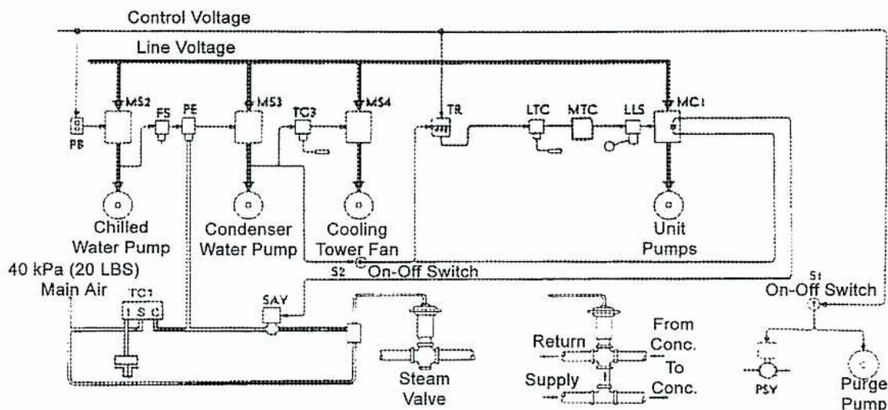
The diagram illustrates the control system for an absorption unit. It features two main power lines: 'Control Voltage' and 'Line Voltage'. The 'Line Voltage' is connected to several motor starters: MS2 (Chilled Water Pump), MS3 (Condenser Water Pump), MS4 (Cooling Tower Fan), and MC1 (Unit Pumps). The 'Control Voltage' is connected to various control components including a push button (PB), flow switch (FS), pneumatic-electric switch (PE), temperature controller (TC3), transformer (TR), level transmitter (LTC), motorized control valve (MTC), level switch (LLS), and an on-off switch (S2). The 'Chilled Water Pump' is connected to a '40 kPa (20 LBS) Main Air' source and a 'Steam Valve'. The 'Condenser Water Pump' is connected to a 'Return' line and a 'To Conc.' line. The 'Cooling Tower Fan' is connected to a 'PSV' (Pressure Switch Valve) and a 'Purge Pump'. The 'Unit Pumps' are connected to an 'On-Off Switch' (S1).
Figure 31
Absorption Unit Control System
The chilled water pump is started by pressing the start button on the push button station PB. The condenser water pump starter MS3 is electrically interlocked with:
- • Chilled water pump starter MS2 through a set of auxiliary motor starter contacts in MS2
- • Flow switch FS in the chilled water circuit
- • Pneumatic-electric switch PE
When the chilled water pump is started, the auxiliary contacts in MS2 close, and the flow switch FS closes when flow through the circuit is established. The pneumatic chilled water temperature control TC1, sensing the temperature of the chilled water leaving the unit, will, when cooling is required, raise the control line pressure. When the pressure reaches 40 kPa the contacts of the pneumatic-electric switch PE close. Starter MS3 then closes, starting the condenser water pump.
The cooling tower fan starter MS4, which is interlocked with the condenser water pump starter MS3 via the cooling tower thermostat TC3, closes and starts the fan if the temperature of the cooling water leaving the tower is above the thermostat setting. Once started, the operation of the fan is cycled on and off automatically by the thermostat.
After the auxiliary equipment has been started, the absorption unit is placed in operation by turning the on-off switch S2 to ON. This energizes the time delay relay TR. This relay supplies voltage through the contacts of the low temperature control LTC, motor temperature control MTC, and liquid level switch LLS to the unit pump starter MC1. The starter closes and starts the unit pump. At the same time, the interlocking circuit of the solenoid air valve SAV is energized. The valve opens, allowing the control air pressure signal from control TC1 to pass to the pneumatic steam or hot water control valve.
During operation, the control line pressure is varied by control TC1. This controls the flow of steam or hot water to the concentrator, governing the rate of vaporization and concentration within the unit, so that a fairly constant chilled water temperature is maintained over a wide range of load conditions.
When the chilled water temperature drops below the temperature control setting, control TC1 reduces the control air pressure below 40 kPa and the contacts of the PE switch open. This stops the condenser water pump which, in turn, de-energizes the cooling tower fan starter, the time delay relay, and the solenoid air valve. The fan stops and the flow of steam or hot water to the concentrator is cut off. Even though the time delay relay has been de-energized, its contacts remain closed for another four minutes providing continued operation of the unit pumps so that the unit completes its dilution cycle.
Objective 7
Explain leak testing, charging, purging, and compressor lubrication.
INTRODUCTION
It is important to know the basic procedures involved in commissioning and setting up refrigeration systems. This is the case in building operations, where the cooling system may only be seasonally operated.
The following sections outline the procedures required to prepare a system for operation:
- • Leak testing
- • Addition of refrigerant
- • Purging
- • Compressor lubrication
LEAK TESTING
After a refrigerating system is installed, the entire system must be thoroughly inspected for leaks. Inert gases, such as dry nitrogen or carbon dioxide, are used as the testing medium. Gas is supplied from high-pressure cylinders and connected through a pressure reducing valve to either the high- or low-pressure side of the system.
Warning: Do not use gases such as oxygen or any flammable gas for pressure testing due to their explosive nature.
Assuming the test medium is dry nitrogen, the following procedure is recommended:
- 1. Remove controls and relief valves which may be damaged by the test pressure.
- 2. Isolate the compressor by closing the suction and discharge valves.
- 3. Open the liquid shutoff valve in the line between the receiver and the evaporator so that both the high- and low-pressure sides of the system may be initially tested together.
- 4. Connect the nitrogen cylinder to the system charging valve. This cylinder should be equipped with a shutoff valve, a pressure reducing valve or regulator, a cylinder pressure gauge, a line pressure gauge, and a bleed valve.
- 5. Set the pressure reducing valve for the required low-pressure side minimum design pressure, as given in Table 4 of CSA-B52 (Mechanical Refrigeration). For example, the low-pressure side would be 579 kPa if the refrigerant is R-12. The manufacturer of the refrigerating system specifies the required pressure.
- 6. When the line pressure gauge reads the required low side pressure, shut off the cylinder.
- 7. Close the liquid line shutoff valve.
- 8. Set the pressure reducing valve for the minimum design pressure of the high side, as given in CSA-B52, Table 4. For R-12, this pressure would be 875 kPa if the condenser is water cooled. If the condenser in an R-12 system is air cooled, this pressure would be 1165 kPa.
- 9. Open the cylinder shutoff valve and increase the high side pressure.
- 10. Close the cylinder shutoff valve and disconnect the nitrogen cylinder.
Both the high- and low-pressure sides of the system are now at their required test pressures.
If the pressure does not drop noticeably, then all pipe joints in the system should be tested for leaks. Small leaks can be detected by brushing a soap solution around each joint. Leaks will be indicated by the formation of bubbles. As soon as the entire system is tested, the system is depressurized by releasing the gas to the atmosphere. Any leak, large or small, should now be repaired. When the system is assumed to be free of leaks, it is subjected to a second pressure test, but this time a small amount of system refrigerant is added. Refrigerant leak detectors are used to detect leaks instead of using a soap solution.
If no further leaks are discovered during the pressure test, the system should be left pressurized for about 24 hours. The nitrogen or carbon dioxide bottle must be disconnected if the system is left unattended. This prevents accidental overpressuring of the system if any of the valves between the bottle and the system should leak. If the pressure in the system has not changed after this period, allowing for pressure changes due to changes in ambient temperature, the gas is bled off from the high and low sides of the system. Any controls or relief devices previously removed for the pressure test are re-installed. The system is now ready for drying and charging.
Detecting leaks in a system that operates below atmospheric pressure is more difficult. Leakage of air into the system causes the purge unit to cycle more often than usual, resulting in a loss of refrigerant because it is impossible to totally separate air from the refrigerant during purging.
To test a sub-atmospheric pressure refrigerant system for leaks, it is necessary to shut down the compressor and break the vacuum by pressurizing the system with dry nitrogen.
This testing is completed as follows:
- 1. Shut off the compressor and place the purge switch on manual.
- 2. Connect the nitrogen cylinder to the charging valve.
- 3. Fully open the charging valve.
- 4. Set the pressure reducing valve on the test unit to the pressure recommended by the manufacturer and slowly open the shutoff valve on the bottle.
- 5. Observe the pressures on the evaporator and condenser gauges. Close the nitrogen shutoff valve when both gauges read an adequate positive pressure. Caution should be taken not to overpressurize the system. Otherwise, the rupture disc in the cooler will be damaged.
- 6. Test all the joints using an electronic or halide leak detector (system contains nitrogen and Freon mixture).
- 7. Release the gas to atmosphere, evacuate and recharge the system.
Leak Detectors
Two commonly used leak detectors are the halide torch and the electronic leak detector. These two detectors are very sensitive to small leaks and can detect the exact location of leaks where the presence of gas is as low as 20 parts per million. They are suitable for locating leaks of a halogen refrigerant such as R-12 or R-22.
Halide Torch Detector
A small amount of refrigerant is admitted to the system. The system is then pressurized with dry nitrogen at the required test pressures for high and low sides. All joints are checked with a halide leak detector (Fig. 32). This leak detector is a burner that burns acetylene or propane gas. The air required for burning is brought into the bottom of the burner by a tube. If this air tube is held near a leaking pipe joint, then some of the leaking refrigerant will pass up the tube to the burner and cause the burner flame to become a brilliant green. In this way, any leaks in the system due to the presence of refrigerant may be found. This is not a reliable detector if the air space is contaminated with refrigerant.
Warning: When burned, halocarbon refrigerants containing fluorine produce phosgene gas, which is very toxic.
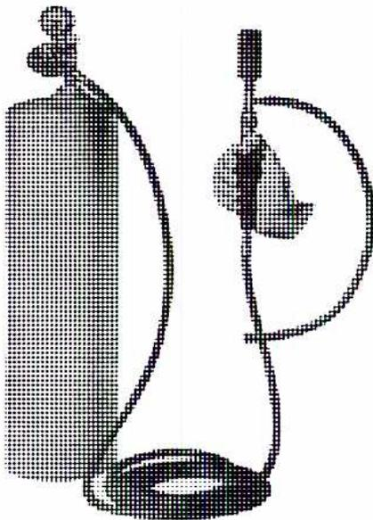
A black and white illustration of a halide torch. It consists of a cylindrical tank with a handle on top, connected by a hose to a long, thin nozzle. The nozzle is shown emitting a small flame or a stream of gas.
Figure 32
Halide Torch
Electronic Leak Detector
The most sensitive leak detector of all is the electronic type (Fig. 33).
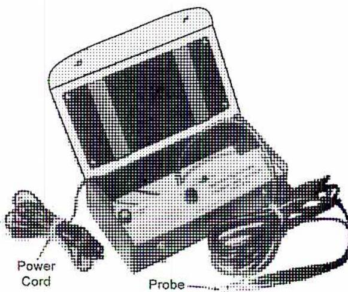
A black and white illustration of an electronic leak detector. It is a rectangular box with a control panel on top. A power cord is plugged into the side, and a long probe with a sniffer tip is connected to the front. The probe is shown resting on a surface.
Figure 33
Electronic Leak Detector
(Courtesy of General Electric Co.)
This instrument is of the dielectric type, which measures a balance of components in the surrounding air and then only responds to halogen gas. The instrument is turned on and calibrated in a normal atmosphere. Referring to Fig. 34, vapour is drawn through a tube fitted with a sniffer. The sniffer is moved over any area where a leak may be suspected. It measures the electrical resistance of the vapour sample. As long as air is drawn into the
detector, it does not react. As soon as the sample contains refrigerant, even a minute amount, the change in resistance of the sample and the resulting change in current flow causes the detector to react. It indicates the presence of refrigerant either on a meter or by activating a light or a buzzer.
Electronic leak detectors are manufactured in various designs and in several price ranges. They vary from highly sophisticated types requiring a 110 volt power supply and indicating the percentage of refrigerant vapour in the sample, to relatively low cost portable units indicating only the presence of refrigerant vapour in the sample.
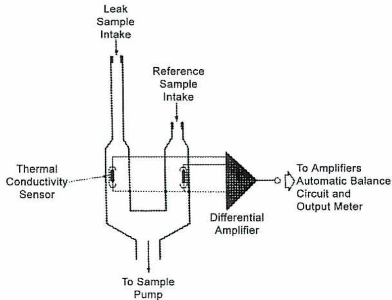
The diagram illustrates the internal components of an electronic leak detector. It features two vertical intake tubes: the 'Leak Sample Intake' on the left and the 'Reference Sample Intake' on the right. Both tubes lead into a central chamber where 'Thermal Conductivity Sensors' are positioned. The outputs from these sensors are connected to a 'Differential Amplifier', represented by a triangle symbol. The output of the amplifier is then directed 'To Amplifiers Automatic Balance Circuit and Output Meter'. At the bottom of the central chamber, an outlet is labeled 'To Sample Pump'.
Figure 34
Schematic of Electronic Leak Detector
(Uson LP)
Litmus Paper Detector
Leaks in ammonia systems are detected using strips of wetted litmus paper. When moved about a suspected joint or valve spindle, any escaping ammonia vapour will change the colour of the litmus paper to a reddish hue.
Sulphur Candle
Ammonia leaks can also be detected using a sulphur candle which, when lit, gives off a cloud of white smoke when exposed to ammonia fumes or vapour.
Soap and Water
Leaks in a pressurized system can be found using a solution of soap and water. Simply brush the solution on the area where the leak is suspected. If a leak is present, bubbles appear. If this method is used, the solution should be washed off after the test, or the solution will dry and the soap will collect dirt on the outside of the system.
ADDITION OF REFRIGERANT
System Drying and Evacuating
Any moisture or water vapour present in a refrigerating system causes serious operating problems. When exposed to low temperatures produced by the system, moisture entrained in the refrigerant causes icing or freeze-up at the expansion valve. In systems using Freon as the refrigerant, acid is formed that reacts with oil to produce sludge and corrodes metal parts. In addition, the acid removes copper from heat exchanger surfaces and redeposits it at points of high temperature, such as bearings and compressor exhaust valves, a process called copper plating .
During operation, large, specially designed, temporary driers are installed in the system. As the liquid refrigerant passes through the drying agent, any moisture present is absorbed.
Before proceeding with the actual charging process, the entire system should be checked to ensure that all the components are ready for operation. Valves should be opened where necessary. Controls should be adjusted to the required settings and the sequence of controls and interlocks tested.
The entire system should be put under a very high vacuum by means of a special vacuum pump. The system compressor should not be used since it is not designed for this purpose and could be seriously damaged. Evacuation of the system should not be attempted unless the temperature of the surrounding air is 20°C or higher. As the air is removed from inside the system, the reduction in pressure causes the moisture to evaporate and be removed with the air.
After sufficient vacuum (as specified by the manufacturer of the vacuum pump) has been obtained, shut off the valve at the pump and disconnect the pump. Allow the system to remain under vacuum as recommended by the refrigeration system manufacturer. If no increase in pressure is indicated on the gauges, the system is free of leaks and moisture. The system is now ready to be charged with refrigerant.
If a system is not adequately evacuated before it is charged with refrigerant, air remains as a noncondensable that accumulates in the condenser during operation, causing high compressor discharge pressures and temperatures.
System Preparation
The initial refrigerant charge is given on the high-pressure side of the system. The refrigerant drum is connected to the liquid charging valve located in the liquid line between the liquid shutoff valve on the receiver or condenser-receiver and the expansion valve. Sometimes, a pressure gauge is connected in the charging line, although it is not absolutely necessary since the pressures in the system can also be observed on the compressor panel gauges.
Warning: When handling refrigerants, goggles must be used for eye protection since even safe refrigerants can cause serious injury by freezing the moisture in the eyes.
The air in the charging line should be purged by leaving the connection at the charging valve slightly loose and cracking open the drum valve. After the air has been forced out of the charging line, the drum valve is closed and the connection to the charging valve tightened. The drum is then inverted so only liquid will pass through the charging line. A charging arrangement is shown in Fig. 35.
Referring to Fig. 35, in preparation for charging:
- 1. Check that the liquid line shutoff valve is closed at the condenser or receiver outlet.
- 2. Open the compressor suction and discharge valves.
- 3. Turn on the condenser cooling water supply, or start the condenser fan if an air cooled or evaporative condenser is used.
- 4. Move the thermostat to its lowest setting if a thermostat controlled solenoid stop valve is used in the liquid line or manually open the valve.
The diagram illustrates a refrigeration system for charging. On the left, a 'Refrigerant Drum' is shown in an inverted position, connected by a hose to a 'Dehydrator'. Above the dehydrator is a 'Pressure Gauge'. A 'Liquid Charging Valve' is located at the top of the dehydrator assembly. A 'Liquid Line to Evaporator' extends from the charging valve area. A 'Sight Glass' is installed on this liquid line. The 'Suction Line' connects the evaporator area back to the compressor. The 'Water Cooled Condensing Unit' is shown on the right, containing the 'Compressor'. The 'Suction Valve' and 'Discharge Valve' are part of the compressor's valve assembly. A 'Liquid Line Shutoff Valve' is located on the liquid line between the condenser and the evaporator. The entire system is mounted on a base, and the 'Trane' logo is visible at the bottom center.
Figure 35
Charging of Refrigeration System
(Courtesy of the Trane Company)
System Charging
- 1. The liquid charging valve is opened and the drum valve is then cracked open to admit liquid refrigerant slowly into the system. It will take a considerable amount of refrigerant to break the existing high vacuum in the system and to raise the system gauge pressure to atmospheric pressure.
- 2. Once the pressure starts rising above atmospheric pressure and above the setting of the low-pressure cut-off switch, the compressor starts.
- 3. The system is now in normal operation except that the liquid flowing into the evaporator is supplied from the refrigerant drum.
- 4. The evaporator must have a source of heat energy during the charging operation (just as in normal operation) in order to evaporate the refrigerant. The refrigerant passes through the system and is stored in liquid form in the condenser or condenser-receiver. Note that the liquid line shutoff valve still remains closed.
- 5. Charging should be continued until the system has received the amount of refrigerant required by the manufacturer. This can be determined by placing the refrigerant drum on a weigh scale. If the receiver is equipped with a sight glass, this indicator provides an additional check.
- 6. When the correct amount of refrigerant has been added to the system, the drum valve and the charging valve are closed.
- 7. The liquid shutoff valve on the receiver is opened. Flow of refrigerant should be watched through the sight glass. If bubbles appear in the flow after the system has settled down to normal, additional refrigerant is required.
- 8. The operation of the system should be checked. If everything is normal, the charging line is disconnected. This should be done with care since the line contains some refrigerant under pressure.
- 9. After the system has been in operation for some time, a small amount of refrigerant may need to be added periodically. If this is necessary, the refrigerant is added in its vapour state by connecting the drum in upright position to the suction line of the compressor. Care must be taken so that no liquid refrigerant is carried over from the drum to the compressor.
Overcharging a system can cause the following:
- • High suction and discharge pressures, creating high compressor power consumption
- • Liquid refrigerant could be forced into the compressor, especially in capillary tube systems. Frost formation on the suction line indicates overcharging
SYSTEM PURGING
Effect of Noncondensable Gases
Noncondensable gases in a refrigerating system cause the high side pressure to rise above the pressure corresponding to the condensing temperature of the refrigerant. For instance, when the condensing temperature of R-12 is 30°C, the corresponding head pressure should be 644 kPa. If the pressure gauge indicates 807 kPa, and condenser cooling is normal, the excess pressure is caused by noncondensable gases in the system. That is, the condenser pressure is considerably higher than the saturation pressure corresponding to the temperature of the refrigerant in the condenser.
Higher than normal head pressure is undesirable because it increases power consumption, reduces compressor capacity, and overstresses compressor parts. Higher temperatures that accompany higher pressures are detrimental to compressor valves and lubrication.
Noncondensable gases result mainly from:
- • Air that may have leaked into the system by improper operating or maintenance procedures, such as insufficient evacuation prior to charging
- • Part of the system is operated at a pressure below atmospheric pressure
- • Impurities in the refrigerant or from a breakdown of the lubricating oil
Noncondensable gases must be removed from the system by either manual or automatic purging. Since these gases tend to collect at the highest point of the condenser and receiver, the purge connections are made at these points.
Numerous varieties of purging devices are available and use refrigeration to condense the refrigerant vapour and separate it from the noncondensable gases. The liquid refrigerant returns to the receiver and the noncondensable elements are vented to the atmosphere. Some purgers are also designed to eliminate water.
Manual Purgers
The purger, shown in Fig. 36, is a manual device and must be operated on a regular schedule. Noncondensable gases can be removed from the system without appreciable loss of refrigerant. These gases accumulate at the top of the condenser and receiver. These two points are connected to the purger. Each unit should be purged separately.
Assuming all the valves are initially closed, the purger operates as follows:
- 1. Open compressor suction valve 1, noncondensable vapour from receiver valve 2 and noncondensable vapour from condenser valve 3. Refrigerant vapour containing the noncondensable elements will then enter the purger housing.
- 2. Partially open expansion valve 4, admitting liquid refrigerant into the coil. Since the coil is open to the compressor suction, the liquid will evaporate and cool the surrounding gases to a temperature which corresponds to the compressor suction pressure. This causes the refrigerant vapour present in the purger to condense.
- 3. When a liquid level appears in the upper sight glass, close manual expansion valve 4 and then open liquid drain valve 5. This permits the refrigerant condensate to pass through the coil to the compressor suction.
- 4. When the liquid level is seen at the lower sight glass, close liquid drain 4 5 and vapour inlet valves 2 and 3.
- 5. Open purge valve 6 to vent the gases to atmosphere via the water beaker. This enables escaping gas to be seen and acts to seal atmospheric air from leaking into the system.
- 6. After the gases have left the purger, vapour inlet valves 2 on the receiver or on the condenser 3 is opened and the process is repeated until all noncondensable gases have been removed. This condition is indicated by the temperature shown on purge vessel pressure gauge 7 (saturation temperature) falling to that indicated on thermometer 8.
![Diagram of a Manual Purger system for a refrigeration unit. The diagram shows a 'Double Pipe Condenser' on the left connected to a 'Receiver' at the bottom. A 'Compressor' is shown above the condenser. A 'Purge Vessel' on the right contains a 'Coil' and is connected to the 'To Compressor Suction' line via 'Suction Valve 1'. 'Vapour Inlet Valves 2' and '3' allow 'Non Condensable Vapour from Receiver' and 'Non Condensable Vapour from Condenser' into the purge vessel. The purge vessel has an 'Upper Sight Glass', a 'Lower Sight Glass', a 'Pressure Gage 7', and a 'Thermometer 8'. A 'Purge Valve 6' at the top of the vessel leads to a 'Water Beaker' to vent 'Non Condensable Gases'. A 'Liquid Drain Valve 5' and a 'Hand Expansion Valve 4' are at the bottom of the purge vessel, with a line leading back to the 'To Compressor Suction' line. 'Water Inlet' and 'Water Outlet' are also shown on the condenser.](f4fdd410cdb84df81274da55721e56fb_img.jpg)
Figure 36
Manual Purger
Automatic Purgers
Most large refrigeration systems are equipped with automatic purgers. Although various designs are available, most purgers operate on the principle illustrated in Fig. 37.
When the automatic purger is operated with the compressor running, the noncondensable gases which enter the purger may carry with them a considerable amount of refrigerant vapour.
To prevent this vapour from escaping to the atmosphere with the gases, the purger is equipped with a chilling coil which causes the vapour to condense and separate from the gas mixture. The liquid refrigerant settles to the lower part of the purger where it is drained back to the receiver, usually by means of an automatic float trap. The noncondensable gases rise to the upper part of the purger where they are released to the atmosphere through an air relief valve.
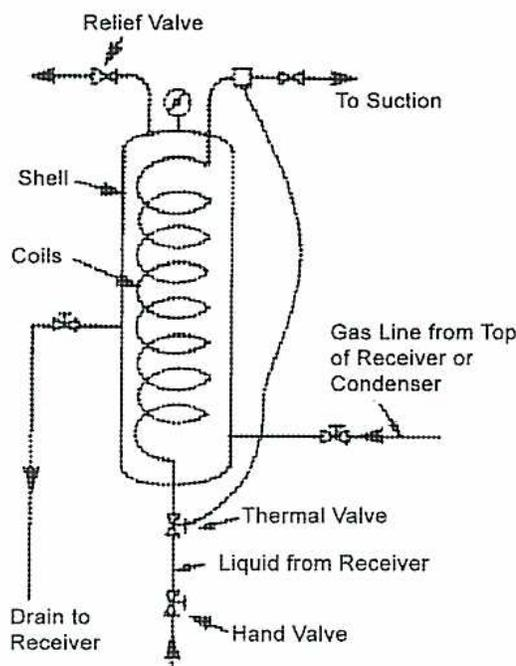
The diagram illustrates the internal structure and piping of an automatic purger. It consists of a vertical cylindrical shell containing a series of horizontal coils. A 'Relief Valve' is located at the top, with an arrow pointing left indicating discharge to the atmosphere. A pipe labeled 'To Suction' exits from the top right. A 'Gas Line from Top of Receiver or Condenser' enters from the right and terminates near the bottom of the shell. At the bottom center, a pipe labeled 'Liquid from Receiver' enters and passes through a 'Thermal Valve' and a 'Hand Valve' before exiting as 'Drain to Receiver'.
Figure 37
Basic Design of an Automatic Purger
The purger, shown in Fig. 38, is primed with refrigerant by cracking open valve 4 and opening valve 3. After the rising liquid level has appeared in the sight glass, the air relief trap valve 4 is fully opened. Open either valve 1 or 2. Both of them must not be open at the same time. The differential valve is a spring-loaded check valve and is used to reduce the pressure at the purger liquid outlet, enabling gas to enter and liquid to be discharged.
Entering gas is trapped in the submerged bucket, which floats the bucket and closes the liquid discharge valve. If there is no air present, the purge gas bubbles through the bucket vent and condenses due to the cooling effect of the coil. No gas reaches the top of the purger to actuate the vent mechanism. When air contaminated purge gas reaches the purger, the refrigerant gas is condensed and the air bubbles rise to the top of the purger. The air displaces the liquid, which enters the inverted bucket causing the trap to discharge through the coil to the lowest available suction pressure.
The air relief trap also opens to vent the air. The actual piping and valve arrangement varies depending on system type, pressure, and compressor controls.
![Figure 38: Automatic Purger schematic diagram. The diagram shows a cross-section of a centrifugal compressor housing with various components labeled. 'Air Out' is at the top (4). 'To Suction' is at the top right (5). 'From Condenser' enters from the right (1). 'From Receiver' enters from the bottom right (2). 'Manual Expansion Valve' is on the left. 'Air Relief Trap' is in the center. 'Refrigeration Coil' is in the center. 'Liquid Supply' enters from the left (3). 'Differential Valve' is at the bottom left. 'Inverted Bucket Trap' is at the bottom.](007b053fe94a8348f75128a584503fd0_img.jpg)
Figure 38
Automatic Purger
(Courtesy of Armstrong)
Purging Centrifugal Compressors
Fig. 39 is a schematic drawing of a Trane purge system suitable for refrigerants such as R-12 that operate at low pressures. The purging cycle can be either manually or automatically operated.
When the purge unit is started, the solenoid valve opens allowing a mixture of refrigerant vapour and noncondensable gases to flow from the condenser to a reciprocating purge compressor. The compressed gas flows into the oil separator where the gas is heated to prevent the refrigerant from condensing and mixing with the entrained oil from the purge compressor.
Oil collects at the bottom of the oil separator and is returned to the crankcase of the purge compressor through a float valve and oil return line.
The vapour then leaves the separator and is condensed in the purge drum, causing the noncondensable gases to rise to the top of the drum. When the pressure in the purge drum exceeds the relief valve setting, the noncondensable gases are discharged to the atmosphere. The condensed refrigerant passes through the float valve and returns to the evaporator.
Any accumulated water collected on the surface of the liquid refrigerant in the purge drum is indicated in the sight glass and can be removed by opening the manual blowoff valve.
Whenever noncondensable gases are released through the relief valve, a small amount of refrigerant is always discharged with the gases. These refrigerant losses increase with the size of the installation. If the losses become excessive, the system should be checked for leaks at the earliest possible time.
![Figure 39: Purge System Schematic. This schematic diagram illustrates the components and flow of a purge system in a refrigeration unit. At the top, 'Flow from Condenser' enters a 'Solenoid Valve', which then feeds into a 'Purge Compressor'. The Purge Compressor is connected to an 'Oil Separator'. The Oil Separator has a 'Heater Control' and a 'Float Level Control'. A 'Heater' is located at the bottom of the Oil Separator. 'Oil Return' is shown returning from the Oil Separator to the Purge Compressor. 'Refrigerant Vapour' is shown exiting the Oil Separator and entering a 'Purge Drum'. The Purge Drum has a 'Purge Drum Gage' and a 'Relief Valve' on top. Inside the Purge Drum, there is a coil labeled 'Water' and a 'Sight Glass'. 'Chilled Water' and 'City Water' are shown entering the Purge Drum. 'Liquid Return to Evaporator' is shown exiting from the bottom of the Purge Drum. A 'Manual Blowoff Valve' is located at the bottom right of the Purge Drum.](4e4be0bd8b235167902f2c03e41da651_img.jpg)
Figure 39
Purge System Schematic
(Courtesy of the Trane Company)
COMPRESSOR LUBRICATION
Adding Oil to a Compressor
Lubricating oil must be added when the level in the crankcase or sump becomes low. Since the crankcase is usually pressurized, the conventional method of adding oil by pouring it through a fill opening cannot be used. Instead, oil is added by charging it into the crankcase with a suitable pump while the compressor is in operation, provided precautions are taken not to force air or moisture into the system with the oil.
Prime the pump discharge line and bleed off any air through the pump to the compressor connection before tightening the connection. Often, a special pump, as outlined above, may not be available. In such cases, an alternate method can be used, which utilizes the
compressor suction to draw oil into the crankcase. The procedure for this method, shown in Fig. 40, is as follows:
- 1. While the compressor is in operation, the suction valve is throttled and the compressor is allowed to continue operation in order to create a slight vacuum in the crankcase.
- 2. One end of a hose is connected to the valve on the fill opening. The other end is raised, and the hose is filled with oil to remove all air. The free end is then submerged in a container with fresh refrigeration grade lubrication oil.
- 3. The oil fill valve is now cracked open, slowly allowing oil to be drawn into the crankcase until the proper level on the crankcase oil level indicator is reached.
- 4. The compressor suction valve is then opened fully, and the system returned to normal operation.
Note: Never allow the end of the hose to come above the surface of the oil since air will be pulled into the system.
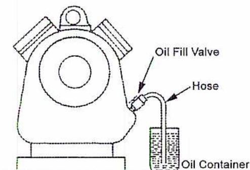
A line drawing of a refrigerating compressor crankcase. On the right side of the crankcase, there is an 'Oil Fill Valve'. A 'Hose' is connected to this valve and extends downwards into an 'Oil Container'. The container is partially filled with oil, and the hose's end is submerged in the oil. The compressor itself is shown with a circular opening on its front face and a handle on top.
Figure 40
Adding Oil to a Refrigerating Compressor Crankcase
Using an oil pump to add oil is much easier than pulling a vacuum on the crankcase. The basic procedure is:
- 1. While the compressor is in operation, attach a rubber hose to the discharge side of a hand pump and connect the other end to the oil fill valve.
- 2. Before tightening the rubber hose connection to the fill valve, place the suction of the pump into the oil container and prime the suction and discharge lines of the pump.
- 3. When the pump is primed, tightly connect the rubber hose to the fill line. This will prevent air entering the system.
- 4. Open the fill valve and pump in the required amount of oil.
- 5. When the oil charge is complete, close the fill valve, disconnect the rubber hose from the fill valve, and move the oil and pump back to their storage area.
Draining Oil from Compressors and Systems
When excess oil has to be removed from the compressor crankcase or the oil has to be changed, the following procedure can be used:
- 1. Pump down the compressor until the pressure in the crankcase just about equals atmospheric pressure.
- 2. Shut off and isolate the compressor.
- 3. Lock out the compressor so it cannot be started until the job is finished.
- 4. Drain the oil by either opening the drain valve or removing the drain plug.
Note: Exercise caution when removing drain plugs as any remaining crankcase pressure will blow out oil and refrigerant vapour.
Objective 8
Describe the common operating problems and troubleshooting procedures for a refrigeration system.
INTRODUCTION
Operating problems in a refrigerating plant are not always easy to classify; however, for the most part, they can be covered with a minimum overlap by considering the major components of a refrigeration system. Irregularities always have the effect of reducing its operating efficiency. Some of the troubles encountered are readily discernible by the operator, while others may exist for long periods without making their presence known until the effects have impaired the capacity and economy of the plant.
The following recommendations are of a general nature only. Under no circumstances should they be followed in preference to operating instructions laid down by the manufacturer of the refrigerating plant concerned.
Because they impact most of the components in the system, it is necessary to first discuss problems encountered with:
- • Refrigerants
- • Oil in the system
- • Moisture in the system
- • Evaporator operation
- • Compressor operation
- • Condenser operation
- • Regulator operation
REFRIGERANTS
For a vapour compression refrigerating plant to operate as designed, it is important that the total amount of refrigerant in the circuit be correct. In addition, the proportions of the charge contained in the condenser and evaporator respectively, when the plant is working, must also be correct. The condenser must contain enough refrigerant to ensure that the temperature of the liquid formed is as near as possible to that of the cooling medium. The evaporator must be supplied with sufficient refrigerant to keep the working surface covered with liquid refrigerant and so maintain the correct degree of superheat.
If a plant is undercharged with refrigerant, either the condenser or evaporator, or both, will not contain enough refrigerant. If the condenser is undercharged, the liquid will leave the unit at a higher than designed temperature. If the evaporator is undercharged, the vapour leaving it will be too highly superheated, causing the temperature of the compressor discharge to be abnormally high.
Adjusting the regulator, under these conditions, can do no more than transfer the state of undercharge from the condenser to the evaporator or vice versa. Undercharge of refrigerant may well be due to refrigerant leakage from pipes, pipe joints, or shaft seals. When ammonia is used, leaks may be quickly traced by the pungent odour.
If the plant is overcharged and the regulator is adjusted to make the compressor operate at its normal (correct) temperature by preventing wet vapour from entering it, the condenser pressure may rise to a dangerous extent. Overcharging is likely due to the addition of too much refrigerant when topping up, so this needs to be watched carefully when it is done.
The amount of refrigerant in the system is indicated by the liquid level in the receiver. Gauge glasses are fitted to the receiver to facilitate control at the correct level. If leakage is suspected from the pipes or pipe joints of submerged coils, it may prove necessary to test the water or brine for presence of refrigerants. Remember that sulphur dioxide and the halogenated refrigerants form corrosive acids in the presence of water. Therefore, when these products are used, it is important to detect the formation of acids and remove them as soon as possible.
OIL IN THE SYSTEM
Irrespective of the type of compressor incorporated in a refrigerating system, part of the oil used for lubricating the cylinders is carried over with the refrigerant into the system, in varying amounts, in the form of finely atomized particles.
An oil separator, although capable of removing drops of oil from refrigerant vapour, is unable to separate finely atomized or vaporized oil, which is consequently carried over into the condenser and deposited on the walls of the tubes. When deposited in this manner, correctly selected lubricating oil will be sufficiently viscous to drain down from the condenser surfaces to an oil well or reservoir.
Unsuitable oils may be decomposed by the high temperatures existing in the compressed refrigerant and so form gummy or otherwise unsatisfactory accumulations within the condenser, which will retard heat transfer. Sometimes, these sticky deposits will be carried from the condenser into the expansion valve where they may clog the small clearances.
Any oil remaining in the refrigerant by the time it reaches the evaporator will be deposited on the surface of the evaporator coils. As in the condenser, any oil which forms a congealed coating on the evaporator surfaces will retard heat transfer and impair the efficiency of the whole plant. Correctly selected oil will remain fluid in the evaporator coils and will readily drain from the surfaces to a point from which it may be withdrawn. It is for this reason that oils selected for lubricating refrigerating machinery must have suitable characteristics at low temperatures in the presence of the refrigerant concerned.
Oil Removal from the System
It is essential that oil separators, and all other points in a system at which lubricating oil accumulates, be drained at frequent intervals if efficient plant operation is to be attained.
To remove the accumulated lubricant from oil separators and other units incorporating lubricant drains, a system of piping is installed to connect all these points to a common oil receiver or recovery drum. This vessel must be capable of withstanding the pressures existing in the high-pressure side of the system.
Before draining the oil, make sure that the recovery drum or still drain valve is closed, and then crack open the line from the drum to the compressor suction. Each oil drain may now be separately drained to the drum by opening its valve. When all the oil has been removed from a particular point, that valve should be closed before starting to drain another point.
Any ammonia present in the oil transferred to the recovery drum will boil off and return to the compressor suction. If the drum also incorporates a heating element, then the refrigerant gas will be driven off at an accelerated rate. This boiling action will be indicated by frosting on the outside of the drum or still. When frosting ceases, close the valve in the line from the drum to the compressor suction and allow an hour or so for the oil to settle before opening the oil drain valve to the compressor sump.
Draining the oil from units in an ammonia system where an integral oil recovery arrangement is not installed entails a very simple operation. The drain pipe from the unit should be extended by a piece of rubber hose into a pail of water. The water will absorb any ammonia which might escape with the oil and at the same time reduce the pungent odour to a minimum.
Crack the drain pipe valve and allow the accumulated oil to blow into the water. When a crackling sound occurs, this indicates that the oil has been drawn off completely and that ammonia vapour is condensing in the water. When this happens, shut the valve.
Oil drains should be emptied about once a week, although this depends on the size of the trap and on the amount of oil entering the system. The amount of oil added to the compressor crankcase gives an indication of how often the oil drains should receive attention.
Initially, the oil will appear as white milky foam in the pail. After standing a short time, clear oil should float on the surface. If a laboratory analysis shows that the oil has experienced little deterioration in passing through the compressor, arrangements should be made to filter out dirt and scale and then re-use the oil. However, if the oil, after standing, floats on top of the water in permanently emulsified form, it is very likely that water or brine has leaked into the system. Steps should be taken to locate and stop this leak.
MOISTURE IN THE SYSTEM
Even a trace of moisture in a refrigeration system can cause serious trouble. This usually takes the form of an obstructed or completely choked regulator due to the formation of ice at this point if the evaporation temperature is below 0°C. This is particularly evident
in systems using Freon as the refrigerant. Moisture can cause copper plating of iron and steel parts and may possibly promote gumming of the lubricating oil, one effect of which may be choked strainers. Specially designed units are often installed to reduce water content to a minimum. These include purging devices and dehydrating cartridges set in the refrigerant line.
It is absolutely essential to use a desiccant which is compatible with the refrigerant in use. It should be remembered that atmospheric air always contains moisture. Therefore, when opening any part of the system, all possible precautions must be taken to prevent the entry of air. All open ends of pipes should be blanked off or otherwise sealed to prevent the entry of air.
Never attempt to clean out any part of the system by blowing compressed air through it since compressed air always contains moisture, which tends to condense out and settle in the system.
EVAPORATOR OPERATION
Inefficient evaporator operation may be due to moisture or oil congealing on the inner surfaces of the coils or to salt encrustations from brine on the outside of the coils.
When the inner surfaces of the evaporating coils are coated with viscous or congealed oil or with other deposits, the refrigerating effect is impaired, even though an extremely low temperature may be maintained within the coils. Unobstructed heat transfer in the evaporating coils is most essential for efficient operation.
With effective oil rings in the pistons and an efficient oil separator in the compressor discharge line, oil collects slowly in the evaporator. Monthly draining should suffice. Where oil has congealed in the evaporator, it can be drained by warming up the system. In the case of refrigerating systems employing ammonia as the refrigerant, the evaporator drain pipe should be connected to a tank of sufficient strength to enable it to safely withstand ammonia pressure at room temperature. Do not use an oil drum. The tank should have a pipe connection to the suction of the compressor. It should also have a drain connection in the bottom. Suitable valves should be installed in each of these lines.
Evaporator Oil Removal
- 1. Warm up the evaporator to a temperature at which the oil flows freely.
- 2. Open the drain at the bottom of the evaporator.
- 3. Balance the pressure in the tank by opening the valve to the compressor suction, permitting the oil to drain from the evaporator.
- 4. Close the valve in the evaporator drain when the tank is full of oil and ammonia.
- 5. Leave the valve to the compressor suction open, and with the compressor running, boil off the ammonia in the tank. As long as ammonia remains in the tank, the outside will show frost. When the frost is completely melted, it can be assumed that the ammonia has been pumped back into the system.
- 6. Close the valve to the compressor suction.
- 7. Open the drain valve and drain the oil into pails or barrels.
This procedure enables operators to remove oil from the evaporator coils without losing ammonia. The same general procedure can be used to collect oil drained from other parts of the system.
COMPRESSOR OPERATION
Problems with compressor operation can be deduced from low or high pressures or temperatures. In some cases, this occurs because the compressor is required to operate at a higher compression ratio. In other cases, it is a reflection of deterioration in the compressor itself.
An excessive discharge pressure is nearly always indicative of poor refrigeration system operation. It also creates conditions under which satisfactory lubrication is difficult to obtain.
To analyze machine performance, knowledge of the temperatures of the suction and discharge gases is necessary, together with their respective pressures. High discharge temperature may be caused by a high compression ratio, or it may be the result of inefficient compressor operation, such as that caused by leaking discharge valves.
High Discharge Temperature
Discharge temperatures higher than normal for the compression ratio indicate that the compressor is generating unnecessary heat. High temperatures also increase the rate of deterioration of lubricating oil, resulting in an accumulation of gummy deposits and imperfect cylinder lubrication. Deposits on discharge valves are continuously exposed to high temperatures and tend to gradually bake into hard carbon deposits which interfere with valve action.
Causes of high temperature at the compressor discharge are:
- • Inefficient operation of the condenser, causing high head pressures and consequently high discharge temperatures. Hot cooling water will also cause high head pressures.
- • Accumulation of scale or dirt in the compressor cooling-water jackets.
- • Re-compression and consequent heating of refrigerant vapour caused by leaky or sluggish discharge valves or leakage past worn or broken piston rings.
- • Inadequate valve capacity as a result of operating the compressor above its rated speed or as a result of an accumulation of deposits in choked discharge passages.
Low Discharge Temperature
Low discharge temperatures may be caused by the presence of cold liquid in the suction. Liquid refrigerant returning to the compressor indicates either that the expansion valve is open too wide, or that impurities in the evaporating coils have caused foaming. In either case, to minimize cylinder wear, the trouble should be remedied.
The practice of introducing liquid ammonia into the compressor suction is called wet compression and was once regarded as beneficial. It has been given up by most builders and users, but it may be used as a means of reducing discharge temperatures where other means cannot be used. If used, injection should be gradual, as large slugs of liquid may damage the compressor. The use of safety cylinder heads, although it does not prevent knock in the cylinder, decreases this danger.
CONDENSER OPERATION
Defective condenser operation may emanate from dirty cooling water on the outside of the cooling coils or a coating of oil or oil-derived material on the inside. Using the proper oil will assist considerably in eliminating incorrect operation of the condenser coils. Trouble may also be experienced due to the presence of noncondensable gases in the condenser and the need for purging.
If the cooling water contains scale-forming inclusions, scale may be deposited on the waterside of the condenser coils in shell-and-tube, double-pipe, and submerged-type condensers. These accumulations serve to decrease the rate of heat flow through the coil wall and impair the efficiency of the condenser and of the system as a whole. Carbonate scale can be removed by filling the waterside of the condenser with a 25% solution of muriatic acid.
The pipes of atmospheric-type condensers should be inspected externally. The surfaces of double-pipe condensers are not so easily accessible, but should nevertheless be inspected at regular intervals. The installation of a water softening plant will prove of value in those areas where the water is exceptionally prone to scale formation.
A serious reduction in the rate of heat transfer through the condenser coils will occur if lubricating oil deposits are permitted to accumulate on the inside surfaces of the coils or tubes. Resistance to heat flow influences the temperature difference between the cooling water and the refrigerant.
Noncondensable gases, which consist of a mixture of air, water, and oil vapour, circulate with the refrigerant, but unlike the refrigerant do not liquefy in the condenser. Therefore, there is a great tendency for them to collect in the condenser and in the liquid receiver.
When such noncondensable gases are present, they raise the designed condensing pressure above that corresponding to the condensing temperature and interfere with the efficiency of the plant. This reduction in condenser efficiency not only causes higher pressures in the high-pressure side of the system, but also increases the compressor power requirement.
To test for the presence of noncondensable gases in a system, the following procedure may be followed.
- 1. Pump over the entire refrigerant charge into the condenser by closing the valve which allows liquid access to the evaporator.
- 2. Allow the system to stand with the cooling water circulating through the condenser until both refrigerant and water are at the same temperature.
- 3. Note the pressure in the condenser. If it is higher than the saturation pressure of the refrigerant at the existing temperature, the presence of air and other noncondensable gases is indicated.
- 4. Purging must then be carried out according to the instructions applicable to the plant.
Airborne particles can cause fouling of air-cooled condensers. This type of condenser, having gilled or wire wound tubes, collects dirt and fluff, which if allowed to accumulate, will seriously impair heat transfer capabilities.
REGULATOR OPERATION
The functioning of automatic regulators can be impaired by deposits of wax-like material or congealed oil, which may be the result of incorrect refrigerator oil selection. However, expansion valve operation can also be impaired by factors other than lubricating oil, such as dirt or scale carried by the refrigerant. A strainer should be installed in the liquid line, or a finer screen should be used if a strainer is already in use.
In Freon systems, moisture may freeze in the expansion valve, and the resulting ice may cause the valve to stick. If refrigerant vapour should form in the liquid line, conditions may occur which appear to be the result of improper regulator operation. Such vapour may form as a result of restricted liquid flow between the receiver and the regulator valve. A plugged strainer, partially closed stop valve, or too small piping might also produce a similar result.
Scale and other impurities sometimes find their way into the regulator where they may lodge in the valve and reduce the rate of liquid flow to the evaporator. The liquid receiver acts as a scale trap, but it cannot prevent scale flaking from the liquid pipe between the receiver and the regulator. In order to facilitate cleaning and repair, the regulator is frequently fitted between two stop valves, which can be closed whenever the need arises.
Chapter Questions
B3.9
-
1. a) What is the main code applicable to refrigeration in Canada?
b) Describe two criteria that are used to classify refrigeration requirements as it relates to design. - 2. Describe the purpose of a temperature-actuated control (thermostat) and list three methods that can be used to achieve this.
-
3. a) State the two pressure limits present in a refrigeration system and explain how they function.
b) At what pressures are they set? - 4. Describe the function and operation of a thermostatic expansion valve.
- 5. List and describe three methods for varying the capacity of compressors.
- 6. List four things that should be checked after a refrigeration system has been started.
-
7. a) What are the two types of leak detectors used for halogen refrigerants?
b) Explain briefly how they work. - 8. What are two reasons for drying a refrigeration system?
-
9. Describe a problem that can be encountered by:
a) Insufficient refrigerant
b) Overcharging